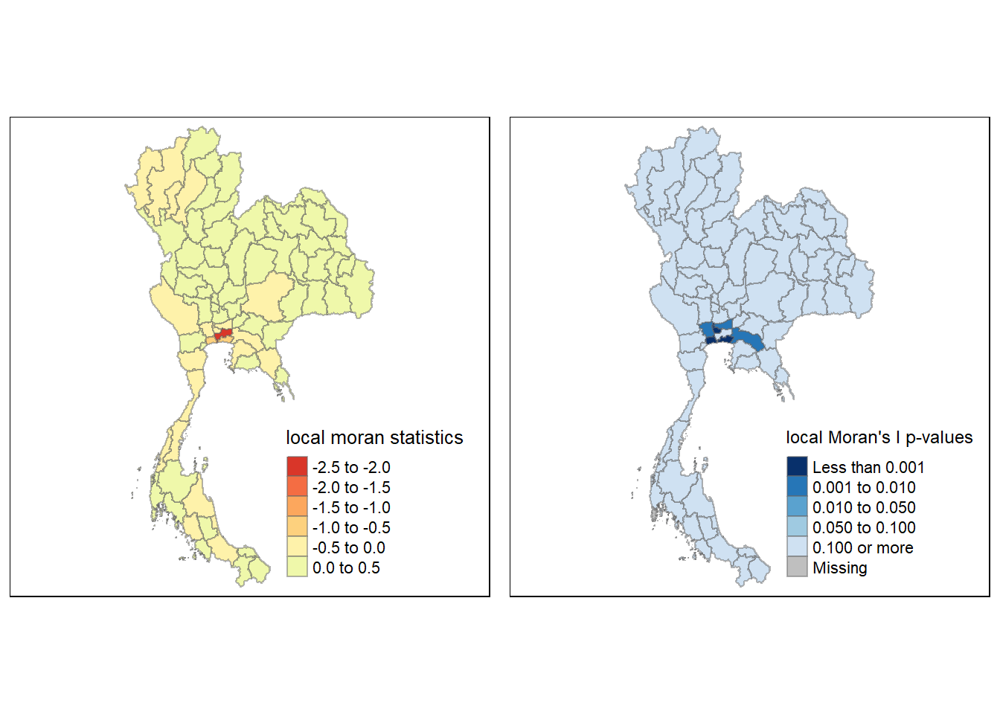

pacman::p_load(sf, sfdep, spdep, tmap, tidyverse, knitr, dplyr, spacetime, ggplot2)Take-home Exercise 2
1 Overview
Tourism is a critical part of Thailand’s economy, contributing around 20% of its GDP before the COVID-19 pandemic. In 2019, the country earned $90 billion from tourism, but this dropped sharply to $24 billion in 2020 due to the pandemic. Though recovery began in late 2021, revenues remain below pre-pandemic levels, with key tourist hubs like Bangkok and Phuket rebounding faster than smaller provinces.
This study focuses on understanding the spatial and temporal recovery of Thailand’s tourism economy from 2019 to 2023. Using spatial autocorrelation methods such as Global Moran’s I and Local Moran’s I, we aim to detect clusters of tourism activity across provinces. In addition, we will conduct an emerging hotspot analysis to track tourism trends over time, revealing which areas are leading recovery and which remain underperforming.
Previous studies, such as Stankov et al. (2017), have successfully used spatial analysis to identify tourism clusters in Serbia, and Khan et al. (2017) applied similar methods in the U.S. to detect social trends. Applying these techniques in Thailand can provide insights into the geographic distribution of recovery, guiding targeted policy interventions.
2 Objective
Given the importance of the tourism sector to Thailand’s economic recovery, this study aims to address the following key research questions:
- Are Thailand’s tourism revenue patterns spatially and temporally dependent?
- Where are the emerging hotspots and cold spots in tourism recovery?
3 Installing and launching the R packages
In this exercise, the following R packages will be used, they are:
sf: For handling and manipulating spatial data (e.g., shapefiles of Thailand’s provinces).sfdep: Provides tools for spatial dependence analysis onsfobjects. This will be used for calculating spatial autocorrelation metrics like Local Moran’s I and detecting clusters/outliers in tourism revenue data.spdep: For advanced spatial analysis, including spatial weights creation and conducting spatial lag and error models relevant to tourism data.tmap: Enables the creation of interactive and static thematic maps, crucial for visualizing clusters, hot/cold spots, and emerging tourism patterns.tidyverse: A suite of packages for data cleaning, manipulation, and visualization, used to manage and prepare the tourism data for analysis.knitr: Facilitates the generation of dynamic reports, integrating R code and output for documentation and reproducibility of the analysis.dplyr: Used for efficient data manipulation and cleaning, helping to preprocess the tourism revenue dataset before spatial analysis.spacetime: For managing and analyzing spatio-temporal data, allowing us to compare tourism revenue patterns over time (e.g., comparing 2020 and 2022 data).ggplot2: A visualization tool for creating detailed spatial and statistical plots, used to complementtmapfor presenting tourism revenue patterns.
4 Data Import and Preparation
4.1 The Data
4.2 Import Thailand Domestic Tourism Statistics
This dataset provides monthly data on tourism activity across Thailand’s provinces, from January 2019 to February 2023. The variable of interest is the ratio of tourist stays in each province, which reflects the percentage of tourists who stay overnight compared to the total number of visitors.
Since data set is in csv file format, we will use read_csv() of readr package to import thailand_domestic_tourism_2019_2023_ver2.csv as shown the code chunk below. The output R object is called tour.
tour <- read_csv("Data/rawdata/thailand_domestic_tourism_2019_2023_ver2.csv")After importing the data file into R, it is important for us to examine if the data file has been imported correctly.
The code chunk below shows summary() and list() of Base R.
The dataset includes the following columns:
date: The time period (monthly data).province_thai: The name of the province in Thai.province_eng: The name of the province in English.region_thai: The region name in Thai.region_eng: The region name in English.variable: 8 types of data being recorded, such as the number of tourists or the occupancy rate.no_tourist_allThe total number of tourists who visited the provinceno_tourist_foreignThe number of foreign tourists who visited the provinceno_tourist_stayThe total number of occupied hotel rooms in the provinceno_tourist_thaiThe number of Thai tourists who visited the provinceratio_tourist_stayThe percentage of occupied travel accommodation in the provincerevenue_allThe revenue generated by the tourism industry in the province, in Thai Bahtrevenue_foreignThe revenue generated by foreign tourists in the province, in Thai Bahtrevenue_thaiThe revenue generated by Thai tourists in the province, in Thai Baht
value: The value of the measured variable.
This dataset provides crucial insights into the tourism trends for each province, enabling the identification of recovery patterns after the pandemic. By analyzing the changes in the ratio of tourist stays, we can gauge how tourism activities have fluctuated in response to external factors, such as COVID-19.
summary(tour) date province_thai province_eng region_thai
Min. :2019-01-01 Length:30800 Length:30800 Length:30800
1st Qu.:2020-01-01 Class :character Class :character Class :character
Median :2021-01-16 Mode :character Mode :character Mode :character
Mean :2021-01-15
3rd Qu.:2022-02-01
Max. :2023-02-01
region_eng variable value
Length:30800 Length:30800 Min. :-4.250e+03
Class :character Class :character 1st Qu.: 1.740e+03
Mode :character Mode :character Median : 9.335e+04
Mean : 3.360e+08
3rd Qu.: 1.817e+07
Max. : 1.103e+11 list(tour)[[1]]
# A tibble: 30,800 × 7
date province_thai province_eng region_thai region_eng variable value
<date> <chr> <chr> <chr> <chr> <chr> <dbl>
1 2019-01-01 กรุงเทพมหานคร Bangkok ภาคกลาง central ratio_t… 93.4
2 2019-01-01 ลพบุรี Lopburi ภาคกลาง central ratio_t… 61.3
3 2019-01-01 พระนครศรีอยุธยา Phra Nakhon S… ภาคกลาง central ratio_t… 73.4
4 2019-01-01 สระบุรี Saraburi ภาคกลาง central ratio_t… 67.3
5 2019-01-01 ชัยนาท Chainat ภาคกลาง central ratio_t… 79.3
6 2019-01-01 นครปฐม Nakhon Pathom ภาคกลาง central ratio_t… 71.7
7 2019-01-01 สิงห์บุรี Sing Buri ภาคกลาง central ratio_t… 64.6
8 2019-01-01 อ่างทอง Ang Thong ภาคกลาง central ratio_t… 71.2
9 2019-01-01 นนทบุรี Nonthaburi ภาคกลาง central ratio_t… 75.1
10 2019-01-01 ปทุมธานี Pathum Thani ภาคกลาง central ratio_t… 60.8
# ℹ 30,790 more rows4.3 Import Thailand - Subnational Administrative Boundaries
This dataset contains the geographic boundaries of Thailand’s provinces, represented as polygons. It is essential for spatial analysis and will be used to map and visualize the spatial distribution of tourism activities across Thailand.
The code chunk below uses st_read() function of sf package to import tha_adm_rtsd_itos_20210121_SHP shapefile into R as a polygon feature data frame.
admin_boundaries_raw <- st_read("Data/rawdata/tha_admbnda_adm2_rtsd_20220121.shp")Reading layer `tha_admbnda_adm2_rtsd_20220121' from data source
`C:\gniyuy\ISSS626_GA\Take-home_Ex\Take-home_Ex02\Data\rawdata\tha_admbnda_adm2_rtsd_20220121.shp'
using driver `ESRI Shapefile'
Simple feature collection with 928 features and 19 fields
Geometry type: MULTIPOLYGON
Dimension: XY
Bounding box: xmin: 97.34336 ymin: 5.613038 xmax: 105.637 ymax: 20.46507
Geodetic CRS: WGS 84The boundary dataset is currently using the EPSG:4326 (WGS 84) coordinate reference system, which employs latitude and longitude in degrees. While suitable for global mapping, EPSG:4326 is not ideal for precise local analysis due to its use of degrees rather than meters.
To improve spatial accuracy and facilitate local analysis in Thailand, the coordinate system will be transformed to EPSG:32647 (UTM Zone 47N), which uses meters for measurement. The reasons include:
Improved Accuracy: UTM projections, like EPSG:32647, provide more precise distance and area calculations compared to WGS 84, which uses degrees.
Better for Local Analysis: UTM zones minimize distortions for regional-scale mapping, making it more suitable for spatial analysis in Thailand.
Consistency: Many spatial studies in Thailand use UTM Zone 47N for local accuracy.
print("Geospatial Properties:")[1] "Geospatial Properties:"print(st_crs(admin_boundaries_raw))Coordinate Reference System:
User input: WGS 84
wkt:
GEOGCRS["WGS 84",
DATUM["World Geodetic System 1984",
ELLIPSOID["WGS 84",6378137,298.257223563,
LENGTHUNIT["metre",1]]],
PRIMEM["Greenwich",0,
ANGLEUNIT["degree",0.0174532925199433]],
CS[ellipsoidal,2],
AXIS["latitude",north,
ORDER[1],
ANGLEUNIT["degree",0.0174532925199433]],
AXIS["longitude",east,
ORDER[2],
ANGLEUNIT["degree",0.0174532925199433]],
ID["EPSG",4326]]print(st_geometry_type(admin_boundaries_raw)) [1] MULTIPOLYGON MULTIPOLYGON MULTIPOLYGON MULTIPOLYGON MULTIPOLYGON
[6] MULTIPOLYGON MULTIPOLYGON MULTIPOLYGON MULTIPOLYGON MULTIPOLYGON
[11] MULTIPOLYGON MULTIPOLYGON MULTIPOLYGON MULTIPOLYGON MULTIPOLYGON
[16] MULTIPOLYGON MULTIPOLYGON MULTIPOLYGON MULTIPOLYGON MULTIPOLYGON
[21] MULTIPOLYGON MULTIPOLYGON MULTIPOLYGON MULTIPOLYGON MULTIPOLYGON
[26] MULTIPOLYGON MULTIPOLYGON MULTIPOLYGON MULTIPOLYGON MULTIPOLYGON
[31] MULTIPOLYGON MULTIPOLYGON MULTIPOLYGON MULTIPOLYGON MULTIPOLYGON
[36] MULTIPOLYGON MULTIPOLYGON MULTIPOLYGON MULTIPOLYGON MULTIPOLYGON
[41] MULTIPOLYGON MULTIPOLYGON MULTIPOLYGON MULTIPOLYGON MULTIPOLYGON
[46] MULTIPOLYGON MULTIPOLYGON MULTIPOLYGON MULTIPOLYGON MULTIPOLYGON
[51] MULTIPOLYGON MULTIPOLYGON MULTIPOLYGON MULTIPOLYGON MULTIPOLYGON
[56] MULTIPOLYGON MULTIPOLYGON MULTIPOLYGON MULTIPOLYGON MULTIPOLYGON
[61] MULTIPOLYGON MULTIPOLYGON MULTIPOLYGON MULTIPOLYGON MULTIPOLYGON
[66] MULTIPOLYGON MULTIPOLYGON MULTIPOLYGON MULTIPOLYGON MULTIPOLYGON
[71] MULTIPOLYGON MULTIPOLYGON MULTIPOLYGON MULTIPOLYGON MULTIPOLYGON
[76] MULTIPOLYGON MULTIPOLYGON MULTIPOLYGON MULTIPOLYGON MULTIPOLYGON
[81] MULTIPOLYGON MULTIPOLYGON MULTIPOLYGON MULTIPOLYGON MULTIPOLYGON
[86] MULTIPOLYGON MULTIPOLYGON MULTIPOLYGON MULTIPOLYGON MULTIPOLYGON
[91] MULTIPOLYGON MULTIPOLYGON MULTIPOLYGON MULTIPOLYGON MULTIPOLYGON
[96] MULTIPOLYGON MULTIPOLYGON MULTIPOLYGON MULTIPOLYGON MULTIPOLYGON
[101] MULTIPOLYGON MULTIPOLYGON MULTIPOLYGON MULTIPOLYGON MULTIPOLYGON
[106] MULTIPOLYGON MULTIPOLYGON MULTIPOLYGON MULTIPOLYGON MULTIPOLYGON
[111] MULTIPOLYGON MULTIPOLYGON MULTIPOLYGON MULTIPOLYGON MULTIPOLYGON
[116] MULTIPOLYGON MULTIPOLYGON MULTIPOLYGON MULTIPOLYGON MULTIPOLYGON
[121] MULTIPOLYGON MULTIPOLYGON MULTIPOLYGON MULTIPOLYGON MULTIPOLYGON
[126] MULTIPOLYGON MULTIPOLYGON MULTIPOLYGON MULTIPOLYGON MULTIPOLYGON
[131] MULTIPOLYGON MULTIPOLYGON MULTIPOLYGON MULTIPOLYGON MULTIPOLYGON
[136] MULTIPOLYGON MULTIPOLYGON MULTIPOLYGON MULTIPOLYGON MULTIPOLYGON
[141] MULTIPOLYGON MULTIPOLYGON MULTIPOLYGON MULTIPOLYGON MULTIPOLYGON
[146] MULTIPOLYGON MULTIPOLYGON MULTIPOLYGON MULTIPOLYGON MULTIPOLYGON
[151] MULTIPOLYGON MULTIPOLYGON MULTIPOLYGON MULTIPOLYGON MULTIPOLYGON
[156] MULTIPOLYGON MULTIPOLYGON MULTIPOLYGON MULTIPOLYGON MULTIPOLYGON
[161] MULTIPOLYGON MULTIPOLYGON MULTIPOLYGON MULTIPOLYGON MULTIPOLYGON
[166] MULTIPOLYGON MULTIPOLYGON MULTIPOLYGON MULTIPOLYGON MULTIPOLYGON
[171] MULTIPOLYGON MULTIPOLYGON MULTIPOLYGON MULTIPOLYGON MULTIPOLYGON
[176] MULTIPOLYGON MULTIPOLYGON MULTIPOLYGON MULTIPOLYGON MULTIPOLYGON
[181] MULTIPOLYGON MULTIPOLYGON MULTIPOLYGON MULTIPOLYGON MULTIPOLYGON
[186] MULTIPOLYGON MULTIPOLYGON MULTIPOLYGON MULTIPOLYGON MULTIPOLYGON
[191] MULTIPOLYGON MULTIPOLYGON MULTIPOLYGON MULTIPOLYGON MULTIPOLYGON
[196] MULTIPOLYGON MULTIPOLYGON MULTIPOLYGON MULTIPOLYGON MULTIPOLYGON
[201] MULTIPOLYGON MULTIPOLYGON MULTIPOLYGON MULTIPOLYGON MULTIPOLYGON
[206] MULTIPOLYGON MULTIPOLYGON MULTIPOLYGON MULTIPOLYGON MULTIPOLYGON
[211] MULTIPOLYGON MULTIPOLYGON MULTIPOLYGON MULTIPOLYGON MULTIPOLYGON
[216] MULTIPOLYGON MULTIPOLYGON MULTIPOLYGON MULTIPOLYGON MULTIPOLYGON
[221] MULTIPOLYGON MULTIPOLYGON MULTIPOLYGON MULTIPOLYGON MULTIPOLYGON
[226] MULTIPOLYGON MULTIPOLYGON MULTIPOLYGON MULTIPOLYGON MULTIPOLYGON
[231] MULTIPOLYGON MULTIPOLYGON MULTIPOLYGON MULTIPOLYGON MULTIPOLYGON
[236] MULTIPOLYGON MULTIPOLYGON MULTIPOLYGON MULTIPOLYGON MULTIPOLYGON
[241] MULTIPOLYGON MULTIPOLYGON MULTIPOLYGON MULTIPOLYGON MULTIPOLYGON
[246] MULTIPOLYGON MULTIPOLYGON MULTIPOLYGON MULTIPOLYGON MULTIPOLYGON
[251] MULTIPOLYGON MULTIPOLYGON MULTIPOLYGON MULTIPOLYGON MULTIPOLYGON
[256] MULTIPOLYGON MULTIPOLYGON MULTIPOLYGON MULTIPOLYGON MULTIPOLYGON
[261] MULTIPOLYGON MULTIPOLYGON MULTIPOLYGON MULTIPOLYGON MULTIPOLYGON
[266] MULTIPOLYGON MULTIPOLYGON MULTIPOLYGON MULTIPOLYGON MULTIPOLYGON
[271] MULTIPOLYGON MULTIPOLYGON MULTIPOLYGON MULTIPOLYGON MULTIPOLYGON
[276] MULTIPOLYGON MULTIPOLYGON MULTIPOLYGON MULTIPOLYGON MULTIPOLYGON
[281] MULTIPOLYGON MULTIPOLYGON MULTIPOLYGON MULTIPOLYGON MULTIPOLYGON
[286] MULTIPOLYGON MULTIPOLYGON MULTIPOLYGON MULTIPOLYGON MULTIPOLYGON
[291] MULTIPOLYGON MULTIPOLYGON MULTIPOLYGON MULTIPOLYGON MULTIPOLYGON
[296] MULTIPOLYGON MULTIPOLYGON MULTIPOLYGON MULTIPOLYGON MULTIPOLYGON
[301] MULTIPOLYGON MULTIPOLYGON MULTIPOLYGON MULTIPOLYGON MULTIPOLYGON
[306] MULTIPOLYGON MULTIPOLYGON MULTIPOLYGON MULTIPOLYGON MULTIPOLYGON
[311] MULTIPOLYGON MULTIPOLYGON MULTIPOLYGON MULTIPOLYGON MULTIPOLYGON
[316] MULTIPOLYGON MULTIPOLYGON MULTIPOLYGON MULTIPOLYGON MULTIPOLYGON
[321] MULTIPOLYGON MULTIPOLYGON MULTIPOLYGON MULTIPOLYGON MULTIPOLYGON
[326] MULTIPOLYGON MULTIPOLYGON MULTIPOLYGON MULTIPOLYGON MULTIPOLYGON
[331] MULTIPOLYGON MULTIPOLYGON MULTIPOLYGON MULTIPOLYGON MULTIPOLYGON
[336] MULTIPOLYGON MULTIPOLYGON MULTIPOLYGON MULTIPOLYGON MULTIPOLYGON
[341] MULTIPOLYGON MULTIPOLYGON MULTIPOLYGON MULTIPOLYGON MULTIPOLYGON
[346] MULTIPOLYGON MULTIPOLYGON MULTIPOLYGON MULTIPOLYGON MULTIPOLYGON
[351] MULTIPOLYGON MULTIPOLYGON MULTIPOLYGON MULTIPOLYGON MULTIPOLYGON
[356] MULTIPOLYGON MULTIPOLYGON MULTIPOLYGON MULTIPOLYGON MULTIPOLYGON
[361] MULTIPOLYGON MULTIPOLYGON MULTIPOLYGON MULTIPOLYGON MULTIPOLYGON
[366] MULTIPOLYGON MULTIPOLYGON MULTIPOLYGON MULTIPOLYGON MULTIPOLYGON
[371] MULTIPOLYGON MULTIPOLYGON MULTIPOLYGON MULTIPOLYGON MULTIPOLYGON
[376] MULTIPOLYGON MULTIPOLYGON MULTIPOLYGON MULTIPOLYGON MULTIPOLYGON
[381] MULTIPOLYGON MULTIPOLYGON MULTIPOLYGON MULTIPOLYGON MULTIPOLYGON
[386] MULTIPOLYGON MULTIPOLYGON MULTIPOLYGON MULTIPOLYGON MULTIPOLYGON
[391] MULTIPOLYGON MULTIPOLYGON MULTIPOLYGON MULTIPOLYGON MULTIPOLYGON
[396] MULTIPOLYGON MULTIPOLYGON MULTIPOLYGON MULTIPOLYGON MULTIPOLYGON
[401] MULTIPOLYGON MULTIPOLYGON MULTIPOLYGON MULTIPOLYGON MULTIPOLYGON
[406] MULTIPOLYGON MULTIPOLYGON MULTIPOLYGON MULTIPOLYGON MULTIPOLYGON
[411] MULTIPOLYGON MULTIPOLYGON MULTIPOLYGON MULTIPOLYGON MULTIPOLYGON
[416] MULTIPOLYGON MULTIPOLYGON MULTIPOLYGON MULTIPOLYGON MULTIPOLYGON
[421] MULTIPOLYGON MULTIPOLYGON MULTIPOLYGON MULTIPOLYGON MULTIPOLYGON
[426] MULTIPOLYGON MULTIPOLYGON MULTIPOLYGON MULTIPOLYGON MULTIPOLYGON
[431] MULTIPOLYGON MULTIPOLYGON MULTIPOLYGON MULTIPOLYGON MULTIPOLYGON
[436] MULTIPOLYGON MULTIPOLYGON MULTIPOLYGON MULTIPOLYGON MULTIPOLYGON
[441] MULTIPOLYGON MULTIPOLYGON MULTIPOLYGON MULTIPOLYGON MULTIPOLYGON
[446] MULTIPOLYGON MULTIPOLYGON MULTIPOLYGON MULTIPOLYGON MULTIPOLYGON
[451] MULTIPOLYGON MULTIPOLYGON MULTIPOLYGON MULTIPOLYGON MULTIPOLYGON
[456] MULTIPOLYGON MULTIPOLYGON MULTIPOLYGON MULTIPOLYGON MULTIPOLYGON
[461] MULTIPOLYGON MULTIPOLYGON MULTIPOLYGON MULTIPOLYGON MULTIPOLYGON
[466] MULTIPOLYGON MULTIPOLYGON MULTIPOLYGON MULTIPOLYGON MULTIPOLYGON
[471] MULTIPOLYGON MULTIPOLYGON MULTIPOLYGON MULTIPOLYGON MULTIPOLYGON
[476] MULTIPOLYGON MULTIPOLYGON MULTIPOLYGON MULTIPOLYGON MULTIPOLYGON
[481] MULTIPOLYGON MULTIPOLYGON MULTIPOLYGON MULTIPOLYGON MULTIPOLYGON
[486] MULTIPOLYGON MULTIPOLYGON MULTIPOLYGON MULTIPOLYGON MULTIPOLYGON
[491] MULTIPOLYGON MULTIPOLYGON MULTIPOLYGON MULTIPOLYGON MULTIPOLYGON
[496] MULTIPOLYGON MULTIPOLYGON MULTIPOLYGON MULTIPOLYGON MULTIPOLYGON
[501] MULTIPOLYGON MULTIPOLYGON MULTIPOLYGON MULTIPOLYGON MULTIPOLYGON
[506] MULTIPOLYGON MULTIPOLYGON MULTIPOLYGON MULTIPOLYGON MULTIPOLYGON
[511] MULTIPOLYGON MULTIPOLYGON MULTIPOLYGON MULTIPOLYGON MULTIPOLYGON
[516] MULTIPOLYGON MULTIPOLYGON MULTIPOLYGON MULTIPOLYGON MULTIPOLYGON
[521] MULTIPOLYGON MULTIPOLYGON MULTIPOLYGON MULTIPOLYGON MULTIPOLYGON
[526] MULTIPOLYGON MULTIPOLYGON MULTIPOLYGON MULTIPOLYGON MULTIPOLYGON
[531] MULTIPOLYGON MULTIPOLYGON MULTIPOLYGON MULTIPOLYGON MULTIPOLYGON
[536] MULTIPOLYGON MULTIPOLYGON MULTIPOLYGON MULTIPOLYGON MULTIPOLYGON
[541] MULTIPOLYGON MULTIPOLYGON MULTIPOLYGON MULTIPOLYGON MULTIPOLYGON
[546] MULTIPOLYGON MULTIPOLYGON MULTIPOLYGON MULTIPOLYGON MULTIPOLYGON
[551] MULTIPOLYGON MULTIPOLYGON MULTIPOLYGON MULTIPOLYGON MULTIPOLYGON
[556] MULTIPOLYGON MULTIPOLYGON MULTIPOLYGON MULTIPOLYGON MULTIPOLYGON
[561] MULTIPOLYGON MULTIPOLYGON MULTIPOLYGON MULTIPOLYGON MULTIPOLYGON
[566] MULTIPOLYGON MULTIPOLYGON MULTIPOLYGON MULTIPOLYGON MULTIPOLYGON
[571] MULTIPOLYGON MULTIPOLYGON MULTIPOLYGON MULTIPOLYGON MULTIPOLYGON
[576] MULTIPOLYGON MULTIPOLYGON MULTIPOLYGON MULTIPOLYGON MULTIPOLYGON
[581] MULTIPOLYGON MULTIPOLYGON MULTIPOLYGON MULTIPOLYGON MULTIPOLYGON
[586] MULTIPOLYGON MULTIPOLYGON MULTIPOLYGON MULTIPOLYGON MULTIPOLYGON
[591] MULTIPOLYGON MULTIPOLYGON MULTIPOLYGON MULTIPOLYGON MULTIPOLYGON
[596] MULTIPOLYGON MULTIPOLYGON MULTIPOLYGON MULTIPOLYGON MULTIPOLYGON
[601] MULTIPOLYGON MULTIPOLYGON MULTIPOLYGON MULTIPOLYGON MULTIPOLYGON
[606] MULTIPOLYGON MULTIPOLYGON MULTIPOLYGON MULTIPOLYGON MULTIPOLYGON
[611] MULTIPOLYGON MULTIPOLYGON MULTIPOLYGON MULTIPOLYGON MULTIPOLYGON
[616] MULTIPOLYGON MULTIPOLYGON MULTIPOLYGON MULTIPOLYGON MULTIPOLYGON
[621] MULTIPOLYGON MULTIPOLYGON MULTIPOLYGON MULTIPOLYGON MULTIPOLYGON
[626] MULTIPOLYGON MULTIPOLYGON MULTIPOLYGON MULTIPOLYGON MULTIPOLYGON
[631] MULTIPOLYGON MULTIPOLYGON MULTIPOLYGON MULTIPOLYGON MULTIPOLYGON
[636] MULTIPOLYGON MULTIPOLYGON MULTIPOLYGON MULTIPOLYGON MULTIPOLYGON
[641] MULTIPOLYGON MULTIPOLYGON MULTIPOLYGON MULTIPOLYGON MULTIPOLYGON
[646] MULTIPOLYGON MULTIPOLYGON MULTIPOLYGON MULTIPOLYGON MULTIPOLYGON
[651] MULTIPOLYGON MULTIPOLYGON MULTIPOLYGON MULTIPOLYGON MULTIPOLYGON
[656] MULTIPOLYGON MULTIPOLYGON MULTIPOLYGON MULTIPOLYGON MULTIPOLYGON
[661] MULTIPOLYGON MULTIPOLYGON MULTIPOLYGON MULTIPOLYGON MULTIPOLYGON
[666] MULTIPOLYGON MULTIPOLYGON MULTIPOLYGON MULTIPOLYGON MULTIPOLYGON
[671] MULTIPOLYGON MULTIPOLYGON MULTIPOLYGON MULTIPOLYGON MULTIPOLYGON
[676] MULTIPOLYGON MULTIPOLYGON MULTIPOLYGON MULTIPOLYGON MULTIPOLYGON
[681] MULTIPOLYGON MULTIPOLYGON MULTIPOLYGON MULTIPOLYGON MULTIPOLYGON
[686] MULTIPOLYGON MULTIPOLYGON MULTIPOLYGON MULTIPOLYGON MULTIPOLYGON
[691] MULTIPOLYGON MULTIPOLYGON MULTIPOLYGON MULTIPOLYGON MULTIPOLYGON
[696] MULTIPOLYGON MULTIPOLYGON MULTIPOLYGON MULTIPOLYGON MULTIPOLYGON
[701] MULTIPOLYGON MULTIPOLYGON MULTIPOLYGON MULTIPOLYGON MULTIPOLYGON
[706] MULTIPOLYGON MULTIPOLYGON MULTIPOLYGON MULTIPOLYGON MULTIPOLYGON
[711] MULTIPOLYGON MULTIPOLYGON MULTIPOLYGON MULTIPOLYGON MULTIPOLYGON
[716] MULTIPOLYGON MULTIPOLYGON MULTIPOLYGON MULTIPOLYGON MULTIPOLYGON
[721] MULTIPOLYGON MULTIPOLYGON MULTIPOLYGON MULTIPOLYGON MULTIPOLYGON
[726] MULTIPOLYGON MULTIPOLYGON MULTIPOLYGON MULTIPOLYGON MULTIPOLYGON
[731] MULTIPOLYGON MULTIPOLYGON MULTIPOLYGON MULTIPOLYGON MULTIPOLYGON
[736] MULTIPOLYGON MULTIPOLYGON MULTIPOLYGON MULTIPOLYGON MULTIPOLYGON
[741] MULTIPOLYGON MULTIPOLYGON MULTIPOLYGON MULTIPOLYGON MULTIPOLYGON
[746] MULTIPOLYGON MULTIPOLYGON MULTIPOLYGON MULTIPOLYGON MULTIPOLYGON
[751] MULTIPOLYGON MULTIPOLYGON MULTIPOLYGON MULTIPOLYGON MULTIPOLYGON
[756] MULTIPOLYGON MULTIPOLYGON MULTIPOLYGON MULTIPOLYGON MULTIPOLYGON
[761] MULTIPOLYGON MULTIPOLYGON MULTIPOLYGON MULTIPOLYGON MULTIPOLYGON
[766] MULTIPOLYGON MULTIPOLYGON MULTIPOLYGON MULTIPOLYGON MULTIPOLYGON
[771] MULTIPOLYGON MULTIPOLYGON MULTIPOLYGON MULTIPOLYGON MULTIPOLYGON
[776] MULTIPOLYGON MULTIPOLYGON MULTIPOLYGON MULTIPOLYGON MULTIPOLYGON
[781] MULTIPOLYGON MULTIPOLYGON MULTIPOLYGON MULTIPOLYGON MULTIPOLYGON
[786] MULTIPOLYGON MULTIPOLYGON MULTIPOLYGON MULTIPOLYGON MULTIPOLYGON
[791] MULTIPOLYGON MULTIPOLYGON MULTIPOLYGON MULTIPOLYGON MULTIPOLYGON
[796] MULTIPOLYGON MULTIPOLYGON MULTIPOLYGON MULTIPOLYGON MULTIPOLYGON
[801] MULTIPOLYGON MULTIPOLYGON MULTIPOLYGON MULTIPOLYGON MULTIPOLYGON
[806] MULTIPOLYGON MULTIPOLYGON MULTIPOLYGON MULTIPOLYGON MULTIPOLYGON
[811] MULTIPOLYGON MULTIPOLYGON MULTIPOLYGON MULTIPOLYGON MULTIPOLYGON
[816] MULTIPOLYGON MULTIPOLYGON MULTIPOLYGON MULTIPOLYGON MULTIPOLYGON
[821] MULTIPOLYGON MULTIPOLYGON MULTIPOLYGON MULTIPOLYGON MULTIPOLYGON
[826] MULTIPOLYGON MULTIPOLYGON MULTIPOLYGON MULTIPOLYGON MULTIPOLYGON
[831] MULTIPOLYGON MULTIPOLYGON MULTIPOLYGON MULTIPOLYGON MULTIPOLYGON
[836] MULTIPOLYGON MULTIPOLYGON MULTIPOLYGON MULTIPOLYGON MULTIPOLYGON
[841] MULTIPOLYGON MULTIPOLYGON MULTIPOLYGON MULTIPOLYGON MULTIPOLYGON
[846] MULTIPOLYGON MULTIPOLYGON MULTIPOLYGON MULTIPOLYGON MULTIPOLYGON
[851] MULTIPOLYGON MULTIPOLYGON MULTIPOLYGON MULTIPOLYGON MULTIPOLYGON
[856] MULTIPOLYGON MULTIPOLYGON MULTIPOLYGON MULTIPOLYGON MULTIPOLYGON
[861] MULTIPOLYGON MULTIPOLYGON MULTIPOLYGON MULTIPOLYGON MULTIPOLYGON
[866] MULTIPOLYGON MULTIPOLYGON MULTIPOLYGON MULTIPOLYGON MULTIPOLYGON
[871] MULTIPOLYGON MULTIPOLYGON MULTIPOLYGON MULTIPOLYGON MULTIPOLYGON
[876] MULTIPOLYGON MULTIPOLYGON MULTIPOLYGON MULTIPOLYGON MULTIPOLYGON
[881] MULTIPOLYGON MULTIPOLYGON MULTIPOLYGON MULTIPOLYGON MULTIPOLYGON
[886] MULTIPOLYGON MULTIPOLYGON MULTIPOLYGON MULTIPOLYGON MULTIPOLYGON
[891] MULTIPOLYGON MULTIPOLYGON MULTIPOLYGON MULTIPOLYGON MULTIPOLYGON
[896] MULTIPOLYGON MULTIPOLYGON MULTIPOLYGON MULTIPOLYGON MULTIPOLYGON
[901] MULTIPOLYGON MULTIPOLYGON MULTIPOLYGON MULTIPOLYGON MULTIPOLYGON
[906] MULTIPOLYGON MULTIPOLYGON MULTIPOLYGON MULTIPOLYGON MULTIPOLYGON
[911] MULTIPOLYGON MULTIPOLYGON MULTIPOLYGON MULTIPOLYGON MULTIPOLYGON
[916] MULTIPOLYGON MULTIPOLYGON MULTIPOLYGON MULTIPOLYGON MULTIPOLYGON
[921] MULTIPOLYGON MULTIPOLYGON MULTIPOLYGON MULTIPOLYGON MULTIPOLYGON
[926] MULTIPOLYGON MULTIPOLYGON MULTIPOLYGON
18 Levels: GEOMETRY POINT LINESTRING POLYGON MULTIPOINT ... TRIANGLEprint(st_bbox(admin_boundaries_raw)) xmin ymin xmax ymax
97.343358 5.613038 105.636965 20.465074 4.4 Data Cleaning and Transformation for Thailand Domestic Tourism Statistics
The most relevant columns are:
date: Required for temporal analysis (spacetime analysis).province_eng: The English name of the province, which will be used to join with the spatial boundary dataset.value: The numerical value of the ratio of tourist stays, which is the key variable for your spatial analysis.variable: The variable measured (in this case, it appears to be “ratio_tourist_stay,” representing the ratio of tourist stays).
The other columns, such as province_thai, region_thai, and region_eng, can be omitted if they are not needed for your analysis.
# Select relevant columns: date, province_eng, and value
tour_clean <- tour %>%
select(date, province_eng, variable, value)
# View the cleaned dataset
head(tour_clean)# A tibble: 6 × 4
date province_eng variable value
<date> <chr> <chr> <dbl>
1 2019-01-01 Bangkok ratio_tourist_stay 93.4
2 2019-01-01 Lopburi ratio_tourist_stay 61.3
3 2019-01-01 Phra Nakhon Si Ayutthaya ratio_tourist_stay 73.4
4 2019-01-01 Saraburi ratio_tourist_stay 67.3
5 2019-01-01 Chainat ratio_tourist_stay 79.3
6 2019-01-01 Nakhon Pathom ratio_tourist_stay 71.7Prepare a tourism economy indicators layer using sf and tidyverse functions. The layer should contain tourism economy indicators (like the ratio of tourist stays) for each province.
# Handle missing values
tour_clean$value <- zoo::na.approx(tour_clean$value)Keep the time series at month and year levels to prepare for spacetime analysis.
Ensure that the date column is correctly formatted and aggregate the data by month and year for each province. This step is crucial for later spacetime S3 class analysis.
# Convert 'date' column to date type and aggregate by month and year
tour_clean$date <- as.Date(tour_clean$date)
monthly_data <- tour_clean %>%
group_by(province_eng,variable, month = format(date, "%Y-%m")) %>%
summarize(total_value = mean(value, na.rm = TRUE))# Rename the column
monthly_data <- monthly_data %>%
dplyr:::rename.data.frame(ADM1_EN = province_eng)Under Thailand Domestic Tourism Statistics |
Under Thailand - Subnational Administrative Boundaries |
|---|---|
| Buriram | Buri Ram |
| Chainat | Chai Nat |
| Chonburi | Chon Buri |
| Lopburi | Lop Buri |
| Nong Bua Lamphu | Nong Bua Lam Phu |
| Phang Nga | Phangnga |
| Prachinburi | Prachin Buri |
| Sisaket | Si Sa Ket |
# Create a named vector for renaming provinces
rename_provinces <- c(
"Buriram" = "Buri Ram",
"Chainat" = "Chai Nat",
"Chonburi" = "Chon Buri",
"Lopburi" = "Lop Buri",
"Nong Bua Lamphu" = "Nong Bua Lam Phu",
"Phang Nga" = "Phangnga",
"Prachinburi" = "Prachin Buri",
"Sisaket" = "Si Sa Ket"
)
# Rename provinces in the 'ADM1_EN' column using dplyr
monthly_data <- monthly_data %>%
mutate(ADM1_EN = recode(ADM1_EN, !!!rename_provinces))# Filter the data for 'no_tourist_all'
no_tourist_all_data <- monthly_data %>%
filter(variable == "no_tourist_all")
write_rds(no_tourist_all_data, "Data/rds/no_tourist_all_data.rds")
no_tourist_all_data_join <- readRDS("Data/rds/no_tourist_all_data.rds")# Filter the data for 'revenue_all'
revenue_all_data <- monthly_data %>%
filter(variable == "revenue_all")
write_rds(revenue_all_data, "Data/rds/revenue_all_data.rds")
revenue_all_data_join <- readRDS("Data/rds/revenue_all_data.rds")4.5 Exploratory Data Analysis (EDA) for Thailand Domestic Tourism Statistics
To derive a tourism economy indicator layer to be used for global and local spatial autocorrelation analysis.
We can conduct preliminary visualizations (e.g., time series plots or heat maps) to understand tourism trends and identify any anomalies. This step helps ensure the data is ready for more complex spatial analysis.
Tourist Distribution:
Total Tourists (no_tourist_all): The average number of tourists is around 206,000, but some provinces see as many as 6.13 million, while others experience months with no tourists.
Foreign Tourists (no_tourist_foreign): On average, provinces attract 32,000 foreign tourists, but the median is much lower at 553, showing that a few provinces (up to 2.47 million tourists) dominate international tourism.
Domestic Tourists (no_tourist_thai): Domestic tourism is significant, with an average of 174,000 tourists per province, reaching a maximum of 4.08 million.
Overnight Stays:
Overnight Tourists (no_tourist_stay): The average number of tourists staying overnight is 105,000, but this varies widely across provinces.
Ratio of Overnight Stays (ratio_tourist_stay): On average, 40% of tourists stay overnight, but this can range from 0% (day-trippers) to nearly 96%.
Tourism Revenue:
Total Revenue (revenue_all): Provinces earn an average of 1.34 billion Baht in tourism revenue, with the highest revenue reaching over 1 trillion Baht, indicating a large revenue disparity.
Foreign Revenue (revenue_foreign): Foreign tourists contribute an average of 680 million Baht, with some provinces earning as much as 85 billion Baht.
Domestic Revenue (revenue_thai): Domestic tourists generate an average of 663 million Baht, with a maximum of 45 billion Baht in some provinces.
# Group by variable and calculate summary statistics for each category
summary_stats <- monthly_data %>%
group_by(variable) %>%
summarize(mean_value = mean(total_value, na.rm = TRUE),
median_value = median(total_value, na.rm = TRUE),
min_value = min(total_value, na.rm = TRUE),
max_value = max(total_value, na.rm = TRUE))
print(summary_stats)# A tibble: 8 × 5
variable mean_value median_value min_value max_value
<chr> <dbl> <dbl> <dbl> <dbl>
1 no_tourist_all 206328. 92122. 0 6.13e 6
2 no_tourist_foreign 32366. 553 0 2.47e 6
3 no_tourist_stay 105161. 44579 0 3.34e 6
4 no_tourist_thai 173962. 88782 0 4.09e 6
5 ratio_tourist_stay 38.9 41.8 0 9.59e 1
6 revenue_all 1343875802. 195495000 0 1.10e11
7 revenue_foreign 680232189. 1540000 -4250 8.50e10
8 revenue_thai 663643613. 177310000 0 4.51e10ggplot(no_tourist_all_data, aes(x = month, y = total_value)) +
geom_bar(stat = "identity", fill = "steelblue") +
labs(title = "Monthly Total Number of All Tourists, 2019-2023",
x = "Month-Year", y = "No. of Tourists") +
theme_minimal() +
theme(axis.text.x = element_text(angle = 45, hjust = 1))ggplot(revenue_all_data, aes(x = month, y = total_value)) +
geom_bar(stat = "identity", fill = "steelblue") +
labs(title = "Monthly Total Revenue from Tourism Industry, 2019-2023",
x = "Month-Year", y = "Total Revenue") +
theme_minimal() +
theme(axis.text.x = element_text(angle = 45, hjust = 1))Figure below reveals that the tourism economy of Thailand are mainly focus on five provinces, namely Bangkok, Phuket, Chonburi, Krabi and Chiang Mai.
# Filter the data for all months in 2019 and "revenue_all" in the 'variable' column
revenue_2019 <- monthly_data %>%
filter(variable == "revenue_all", grepl("^2019-", month)) %>%
group_by(ADM1_EN) %>%
summarize(total_revenue = sum(total_value, na.rm = TRUE))
# Create a bar plot using ggplot2
ggplot(revenue_2019, aes(x = reorder(ADM1_EN, total_revenue), y = total_revenue)) +
geom_bar(stat = "identity", fill = "skyblue", color = "black") +
coord_flip() + # Flip coordinates to make a horizontal bar plot
labs(title = "Total Revenue by Province in 2019",
x = "Province",
y = "Total Revenue") +
theme_minimal() # Use a minimal theme for a clean look4.6 Data Cleaning and Transformation for Thailand - Subnational Administrative Boundaries
This will enable the linking of tourism data with geographic boundaries.
Ensure that all provinces are included in the boundary dataset and that their polygon geometries are valid. Check for and fix any invalid geometries.
# Check and fix invalid geometries
sum(!st_is_valid(admin_boundaries_raw)) # Check for invalid geometries[1] 0boundaries <- st_make_valid(admin_boundaries_raw) # Fix invalid geometriesThe following columns that provide information on the administrative area can be retained, such as:
ADM1_EN(English name of the first-level boundary, e.g., province)geometry(spatial information in MULTIPOLYGON format)
admin_boundaries_filtered <- admin_boundaries_raw %>%
dplyr::select(ADM1_EN, geometry)admin_boundaries_drop <- st_zm(admin_boundaries_filtered, drop = TRUE, what = "ZM")Transform the CRS from EPSG:4326 (WGS 84) to EPSG:32647 (UTM Zone 47N) to align with local spatial analysis requirements.
admin_boundaries_cleaned <- admin_boundaries_drop %>%
st_transform(crs = 32647)
# Display the filtered data
summary(admin_boundaries_cleaned) ADM1_EN geometry
Length:928 MULTIPOLYGON :928
Class :character epsg:32647 : 0
Mode :character +proj=utm ...: 0 Group the data by ADM1_EN (the province name) and ensure that you only keep one geometry per province.
simplified_provinces <- admin_boundaries_cleaned %>%
group_by(ADM1_EN) %>%
summarize(geometry = st_union(geometry)) %>%
st_cast("MULTIPOLYGON")4.7 Merging the Two Datasets
Merge the tourism dataset with the provincial boundary dataset to create the study area layer and tourism economy indicators layer for spatial analysis.
no_tourist_all_join <- dplyr:::left_join.data.frame(simplified_provinces, no_tourist_all_data, by = c(ADM1_EN = "ADM1_EN"))
write_rds(no_tourist_all_join, "Data/rds/no_tourist_all.rds")
no_tourist_all_join <- readRDS("Data/rds/no_tourist_all.rds")revenue_all_join <- dplyr:::left_join.data.frame(simplified_provinces, revenue_all_data, by = c(ADM1_EN = "ADM1_EN"))
write_rds(revenue_all_join, "Data/rds/rev_all.rds")
revenue_all_join <- readRDS("Data/rds/rev_all.rds")4.8 Filter the Data for Each Year
To investigate the impact of COVID-19 on Thailand’s tourism industry while choosing specific years, would recommend focusing on the following years:
2020 (Pandemic Year): This year represents the height of the COVID-19 pandemic, with lockdowns, travel restrictions, and a significant decline in both international and domestic tourism. Analyzing this year will highlight how severely the pandemic disrupted tourism in Thailand.
2022 (Recovery Year): By 2022, many countries, including Thailand, began easing restrictions, allowing travel to resume. Analyzing this year helps to assess the recovery phase and whether the tourism industry has bounced back to pre-pandemic levels, or if it is still lagging.
By focusing on these two years, we can clearly assess the immediate impact of the pandemic and the subsequent recovery, providing a targeted understanding of how tourism dynamics shifted between the crisis and recovery periods.
# Convert the 'month' column to a date format
revenue_all_join <- revenue_all_join %>%
mutate(month = as.Date(paste0(month, "-01"), format = "%Y-%m-%d"))
no_tourist_all_join <- no_tourist_all_join %>%
mutate(month = as.Date(paste0(month, "-01"), format = "%Y-%m-%d"))4.8.1 Total revenue generated by tourism industry
rev_2020 <- revenue_all_join %>% filter(format(as.Date(month), "%Y") == "2020")
# Summarize total revenue by province for 2020
rev_2020 <- rev_2020 %>%
group_by(ADM1_EN) %>%
summarize(total_revenue = sum(total_value, na.rm = TRUE))rev_2022 <- revenue_all_join %>% filter(format(as.Date(month), "%Y") == "2022")
# Summarize total revenue by province for 2020
rev_2022 <- rev_2022 %>%
group_by(ADM1_EN) %>%
summarize(total_revenue = sum(total_value, na.rm = TRUE))4.8.2 Number of tourists visited the provinces
notour_2020 <- no_tourist_all_join %>% filter(format(as.Date(month), "%Y") == "2020")
# Summarize total revenue by province for 2020
notour_2020 <- notour_2020 %>%
group_by(ADM1_EN) %>%
summarize(no_tourist = sum(total_value, na.rm = TRUE))notour_2022 <- no_tourist_all_join %>% filter(format(as.Date(month), "%Y") == "2022")
# Summarize total revenue by province for 2020
notour_2022 <- notour_2022 %>%
group_by(ADM1_EN) %>%
summarize(no_tourist = sum(total_value, na.rm = TRUE))4.9 Saving the Analytical Data Table
write_rds(rev_2020, "Data/rds/rev_2020.rds")
write_rds(rev_2022, "Data/rds/rev_2022.rds")
write_rds(notour_2020, "Data/rds/notour_2020 .rds")
write_rds(notour_2022, "Data/rds/notour_2022 .rds")5 Visualising Thailand tourism economy
Let’s load the .rds file using the readRDS() function.
rev_2020 <- readRDS("Data/rds/rev_2020.rds")
rev_2022 <- readRDS("Data/rds/rev_2022.rds")
notour_2020 <- readRDS("Data/rds/notour_2020 .rds")
notour_2022 <- readRDS("Data/rds/notour_2022 .rds")Now, we are going to prepare a basemap and a choropleth map showing the distribution of Thailand tourism economy by using qtm() of tmap package.
tmap_mode("plot")basemap <- tm_shape(rev_2020) +
tm_polygons() +
tm_text("ADM1_EN", size=0.5)
rev_2020_map <- qtm(rev_2020, "total_revenue")
tmap_arrange(basemap, rev_2020_map, asp=1, ncol=2)basemap <- tm_shape(rev_2022) +
tm_polygons() +
tm_text("ADM1_EN", size=0.5)
rev_2022_map <- qtm(rev_2022, "total_revenue")
tmap_arrange(basemap, rev_2022_map, asp=1, ncol=2)basemap <- tm_shape(notour_2020) +
tm_polygons() +
tm_text("ADM1_EN", size=0.5)
notour_2020_map <- qtm(notour_2020, "no_tourist")
tmap_arrange(basemap, notour_2020_map, asp=1, ncol=2)
basemap <- tm_shape(notour_2022) +
tm_polygons() +
tm_text("ADM1_EN", size=0.5)
notour_2022_map <- qtm(notour_2022, "no_tourist")
tmap_arrange(basemap, notour_2022_map, asp=1, ncol=2)6 Global Spatial Autocorrelation Analysis
Global Spatial Autocorrelation Analysis helps determine whether the spatial distribution of tourism revenue is random or exhibits patterns across different regions. This step involves applying the sfdep package in R to compute the Global Moran’s I statistic, which measures the degree of spatial autocorrelation in the dataset. The analysis includes significance testing to confirm whether any detected patterns are statistically significant.
Global Moran’s I is a statistical measure that assesses whether the observed values (e.g., tourism revenue) are clustered, dispersed, or randomly distributed in space. A positive Moran’s I value suggests clustering, a negative value indicates dispersion, and a value near zero implies randomness.
6.1 Total revenue generated by tourism industry
revenue_all represents the total revenue generated by the tourism industry in each province, which makes it a suitable choice for analyzing spatial patterns in economic impact.
Since the analysis aims to understand the spatial distribution of the tourism economy, using revenue data provides direct insights into the financial performance of each province.
6.1.1 Pandemic Year: 2020
The code chunk below is used to compute Queen contiguity weight matrix.
wm_q_rev_2020 <- poly2nb(rev_2020, queen=TRUE)
summary(wm_q_rev_2020)Neighbour list object:
Number of regions: 77
Number of nonzero links: 352
Percentage nonzero weights: 5.93692
Average number of links: 4.571429
1 region with no links:
48
2 disjoint connected subgraphs
Link number distribution:
0 1 2 3 4 5 6 7 8 9
1 1 5 17 15 17 10 5 4 2
1 least connected region:
71 with 1 link
2 most connected regions:
17 69 with 9 linksThe summary report above shows that there are 77 area units in Thailand. The most connected area unit has 9 neighbours. There are one area units with only one neighbours.
The code chunk below is used to compute Rook contiguity weight matrix.
wm_r_rev_2020 <- poly2nb(rev_2020, queen=FALSE)
summary(wm_r_rev_2020)Neighbour list object:
Number of regions: 77
Number of nonzero links: 352
Percentage nonzero weights: 5.93692
Average number of links: 4.571429
1 region with no links:
48
2 disjoint connected subgraphs
Link number distribution:
0 1 2 3 4 5 6 7 8 9
1 1 5 17 15 17 10 5 4 2
1 least connected region:
71 with 1 link
2 most connected regions:
17 69 with 9 linksThe summary report above shows that there are 77 area units in Thailand. The most connected area unit has 9 neighbours. There are one area units with only one neighbours.
A summary of the results are below. In our case, both methods yield similar results.
| Queen Contiguity | Rook Contiguity | |
|---|---|---|
| No. of regions with no links | 5 | 5 |
| Average number of links | 4.571 | 4.571 |
6.1.1.1 Create spatial weights matrix
Create a spatial weights matrix using the tourism data. The spatial weights define how each region is connected to other regions, based on criteria such as contiguity (neighboring areas) or distance.
rswm_q_rev_2020 <- nb2listw(wm_q_rev_2020,
style="W",
zero.policy = TRUE)
rswm_q_rev_2020Characteristics of weights list object:
Neighbour list object:
Number of regions: 77
Number of nonzero links: 352
Percentage nonzero weights: 5.93692
Average number of links: 4.571429
1 region with no links:
48
2 disjoint connected subgraphs
Weights style: W
Weights constants summary:
n nn S0 S1 S2
W 76 5776 76 36.26113 315.6526.1.1.2 Calculate Global Moran’s I
The code chunk below performs Moran’s I statistical testing using moran.test() of spdep.
moran.test(rev_2020$total_revenue,
listw=rswm_q_rev_2020,
zero.policy = TRUE,
na.action=na.omit)
Moran I test under randomisation
data: rev_2020$total_revenue
weights: rswm_q_rev_2020
n reduced by no-neighbour observations
Moran I statistic standard deviate = -0.48052, p-value = 0.6846
alternative hypothesis: greater
sample estimates:
Moran I statistic Expectation Variance
-0.036786950 -0.013333333 0.002382331 Value:
-0.036786950This value is close to zero, which suggests there is no significant spatial autocorrelation in the tourism revenue data across provinces. In simpler terms, the tourism revenue in one province does not seem to be strongly correlated with the tourism revenue in neighboring provinces.
A Moran’s I value close to zero implies that the distribution of tourism revenue across the provinces is random rather than clustered or dispersed.
p-value:
Value:
0.6846The p-value is much higher than the standard significance level (typically 0.05 or 0.01), which means there is no statistically significant spatial autocorrelation. This indicates that you cannot reject the null hypothesis of no spatial correlation.
In other words, there is no statistically significant pattern of similarity or dissimilarity in tourism revenue among neighboring provinces.
Interpretation of the Results in Context:
Conclusion: The results suggest that tourism revenue in each province is not spatially dependent. Neighboring provinces do not tend to have similar tourism revenue patterns, and the distribution of tourism revenue is likely random across provinces.
Implications: This finding implies that the factors influencing tourism revenue may be more locally specific or influenced by other non-spatial factors (such as marketing efforts, tourism infrastructure, or attractions within each province), rather than proximity to neighboring provinces.
6.1.1.3 Computing Monte Carlo Moran’s I
The code chunk below performs permutation test for Moran’s I statistic by using moran.mc() of spdep. A total of 1000 simulation will be performed.
set.seed(1234)
bperm_rev_2020= moran.mc(rev_2020$total_revenue,
listw=rswm_q_rev_2020,
nsim=999,
zero.policy = TRUE,
na.action=na.omit)
bperm_rev_2020
Monte-Carlo simulation of Moran I
data: rev_2020$total_revenue
weights: rswm_q_rev_2020
number of simulations + 1: 1000
statistic = -0.036787, observed rank = 345, p-value = 0.655
alternative hypothesis: greaterValue:
-0.036787- This value is very close to zero, indicating no significant spatial autocorrelation in the tourism revenue data across provinces. It suggests that tourism revenue in one province is not related to the tourism revenue in neighboring provinces.
p-value:
Value:
0.655The p-value from the simulation is quite large, much greater than the standard threshold of 0.05, meaning that there is no statistically significant spatial autocorrelation in tourism revenue. You cannot reject the null hypothesis of no spatial autocorrelation.
The high p-value reinforces that the distribution of tourism revenue across provinces is likely random and not spatially dependent.
Observed rank:
- Observed rank = 345 means that out of the 1000 simulations, the test statistic from your actual data ranked 345th in terms of magnitude. This suggests that your observed Moran’s I value is not unusual compared to the distribution of randomly generated statistics, further indicating no significant spatial pattern.
Conclusion: Similar to the earlier Moran’s I test, this Monte Carlo simulation confirms that there is no significant spatial autocorrelation in tourism revenue across the provinces. The tourism revenue in one province does not influence or show a correlation with that of neighboring provinces.
Implications: Tourism revenue is likely influenced by factors that are not spatially distributed (such as specific attractions, infrastructure, or marketing efforts in each province). The lack of spatial dependency implies that proximity to high-earning provinces doesn’t necessarily mean a neighboring province will also have high tourism revenue.
6.1.1.4 Visualize the Results
Since the observed Moran’s I (red line) lies within the range of the simulated values and near the center of the distribution, this indicates that the spatial distribution of tourism revenue across provinces is random. In other words, there is no significant spatial pattern where provinces with high or low tourism revenue cluster together.
hist(bperm_rev_2020$res,
freq=TRUE,
breaks=20,
xlab="Simulated Moran's I")
abline(v=0,
col="red") 6.1.2 Recovering Year: 2022
The code chunk below is used to compute Queen contiguity weight matrix.
wm_q_rev_2022 <- poly2nb(rev_2022, queen=TRUE)
summary(wm_q_rev_2022)Neighbour list object:
Number of regions: 77
Number of nonzero links: 352
Percentage nonzero weights: 5.93692
Average number of links: 4.571429
1 region with no links:
48
2 disjoint connected subgraphs
Link number distribution:
0 1 2 3 4 5 6 7 8 9
1 1 5 17 15 17 10 5 4 2
1 least connected region:
71 with 1 link
2 most connected regions:
17 69 with 9 linksThe summary report above shows that there are 77 area units in Thailand. The most connected area unit has 9 neighbours. There are one area units with only one neighbours.
The code chunk below is used to compute Rook contiguity weight matrix.
wm_q_rev_2022 <- poly2nb(rev_2022, queen=FALSE)
summary(wm_q_rev_2022)Neighbour list object:
Number of regions: 77
Number of nonzero links: 352
Percentage nonzero weights: 5.93692
Average number of links: 4.571429
1 region with no links:
48
2 disjoint connected subgraphs
Link number distribution:
0 1 2 3 4 5 6 7 8 9
1 1 5 17 15 17 10 5 4 2
1 least connected region:
71 with 1 link
2 most connected regions:
17 69 with 9 linksThe summary report above shows that there are 77 area units in Thailand. The most connected area unit has 9 neighbours. There are one area units with only one neighbours.
A summary of the results are below. In our case, both methods yield similar results.
| Queen Contiguity | Rook Contiguity | |
|---|---|---|
| No. of regions with no links | 5 | 5 |
| Average number of links | 4.571 | 4.571 |
6.1.2.1 Create spatial weights matrix
Create a spatial weights matrix using the tourism data. The spatial weights define how each region is connected to other regions, based on criteria such as contiguity (neighboring areas) or distance.
rswm_q_rev_2022 <- nb2listw(wm_q_rev_2022,
style="W",
zero.policy = TRUE)
rswm_q_rev_2022Characteristics of weights list object:
Neighbour list object:
Number of regions: 77
Number of nonzero links: 352
Percentage nonzero weights: 5.93692
Average number of links: 4.571429
1 region with no links:
48
2 disjoint connected subgraphs
Weights style: W
Weights constants summary:
n nn S0 S1 S2
W 76 5776 76 36.26113 315.6526.1.2.2 Calculate Global Moran’s I
The code chunk below performs Moran’s I statistical testing using moran.test() of spdep.
moran.test(rev_2022$total_revenue,
listw=rswm_q_rev_2022,
zero.policy = TRUE,
na.action=na.omit)
Moran I test under randomisation
data: rev_2022$total_revenue
weights: rswm_q_rev_2022
n reduced by no-neighbour observations
Moran I statistic standard deviate = -0.29739, p-value = 0.6169
alternative hypothesis: greater
sample estimates:
Moran I statistic Expectation Variance
-0.029460999 -0.013333333 0.002940908 Value:
-0.29739This value is close to zero, which suggests there is no significant spatial autocorrelation in the tourism revenue data across provinces. In simpler terms, the tourism revenue in one province does not seem to be strongly correlated with the tourism revenue in neighboring provinces.
A Moran’s I value close to zero implies that the distribution of tourism revenue across the provinces is random rather than clustered or dispersed.
p-value:
Value:
0.6169The p-value is much higher than the standard significance level (typically 0.05 or 0.01), which means there is no statistically significant spatial autocorrelation. This indicates that you cannot reject the null hypothesis of no spatial correlation.
In other words, there is no statistically significant pattern of similarity or dissimilarity in tourism revenue among neighboring provinces.
Interpretation of the Results in Context:
Conclusion: The results suggest that tourism revenue in each province is not spatially dependent. Neighboring provinces do not tend to have similar tourism revenue patterns, and the distribution of tourism revenue is likely random across provinces.
Implications: This finding implies that the factors influencing tourism revenue may be more locally specific or influenced by other non-spatial factors (such as marketing efforts, tourism infrastructure, or attractions within each province), rather than proximity to neighboring provinces.
6.1.2.3 Computing Monte Carlo Moran’s I
The code chunk below performs permutation test for Moran’s I statistic by using moran.mc() of spdep. A total of 1000 simulation will be performed.
set.seed(1234)
bperm_rev_2022= moran.mc(rev_2022$total_revenue,
listw=rswm_q_rev_2022,
nsim=999,
zero.policy = TRUE,
na.action=na.omit)
bperm_rev_2022
Monte-Carlo simulation of Moran I
data: rev_2022$total_revenue
weights: rswm_q_rev_2022
number of simulations + 1: 1000
statistic = -0.029461, observed rank = 494, p-value = 0.506
alternative hypothesis: greaterValue:
-0.029461- This value is very close to zero, indicating no significant spatial autocorrelation in the tourism revenue data across provinces. It suggests that tourism revenue in one province is not related to the tourism revenue in neighboring provinces.
p-value:
Value:
0.506The p-value from the simulation is quite large, much greater than the standard threshold of 0.05, meaning that there is no statistically significant spatial autocorrelation in tourism revenue. You cannot reject the null hypothesis of no spatial autocorrelation.
The high p-value reinforces that the distribution of tourism revenue across provinces is likely random and not spatially dependent.
Observed rank:
- Observed rank = 345 means that out of the 1000 simulations, the test statistic from your actual data ranked 345th in terms of magnitude. This suggests that your observed Moran’s I value is not unusual compared to the distribution of randomly generated statistics, further indicating no significant spatial pattern.
Conclusion: Similar to the earlier Moran’s I test, this Monte Carlo simulation confirms that there is no significant spatial autocorrelation in tourism revenue across the provinces. The tourism revenue in one province does not influence or show a correlation with that of neighboring provinces.
Implications: Tourism revenue is likely influenced by factors that are not spatially distributed (such as specific attractions, infrastructure, or marketing efforts in each province). The lack of spatial dependency implies that proximity to high-earning provinces doesn’t necessarily mean a neighboring province will also have high tourism revenue.
6.1.2.4 Visualize the Results
Since the observed Moran’s I (red line) lies within the range of the simulated values and near the center of the distribution, this indicates that the spatial distribution of tourism revenue across provinces is random. In other words, there is no significant spatial pattern where provinces with high or low tourism revenue cluster together.
hist(bperm_rev_2022$res,
freq=TRUE,
breaks=20,
xlab="Simulated Moran's I")
abline(v=0,
col="red") 7 Local Spatial Autocorrelation Analysis
To perform Local Spatial Autocorrelation Analysis, we will focus on two variables from your dataset: no_tourist_all and revenue_all. These represent the total number of tourists and total revenue, respectively. For each, we’ll apply Local Moran’s I to identify hotspots, cold spots, and spatial outliers.
7.1 Total revenue generated by tourism industry
7.1.1 Pandemic Year: 2020
7.1.1.1 Local Moran’s I Calculation
To compute local Moran’s I, the localmoran() function of spdep will be used. It computes Ii values, given a set of zi values and a listw object providing neighbour weighting information for the polygon associated with the zi values.
The code chunks below are used to compute local Moran’s I of revenue_all at the province level.
fips <- order(rev_2020$total_revenue)
localMI.2020 <- localmoran(rev_2020$total_revenue, rswm_q_rev_2020)
head(localMI.2020) Ii E.Ii Var.Ii Z.Ii Pr(z != E(Ii))
1 0.08453210 -0.0013070248 0.032609705 0.4753482 0.6345388
2 0.07151076 -0.0012480655 0.023035465 0.4793880 0.6316626
3 -2.03020664 -0.7678941085 2.134832232 -0.8639429 0.3876193
4 0.08158788 -0.0012097330 0.030185259 0.4765631 0.6336733
5 0.04135231 -0.0009206770 0.013409885 0.3650484 0.7150753
6 -0.23212301 -0.0007307342 0.006372214 -2.8987027 0.0037471Most provinces show weak clustering or dispersion of tourism revenue, but these are not statistically significant (high p-values).
The province in Row 6 shows significant dispersion (i.e., it has a very different tourism revenue compared to its neighboring provinces). This result is statistically significant, indicating that this province is a potential outlier in the spatial distribution of tourism revenue.
The code chunk below list the content of the local Moran matrix derived by using printCoefmat().
printCoefmat(data.frame(
localMI.2020[fips,],
row.names=rev_2020$ADM1_EN[fips]),
check.names=FALSE) Ii E.Ii Var.Ii Z.Ii
Nong Bua Lam Phu 4.6062e-02 -1.3147e-03 3.2802e-02 2.6159e-01
Amnat Charoen 8.4532e-02 -1.3070e-03 3.2610e-02 4.7535e-01
Yasothon 8.6775e-02 -1.2768e-03 1.8590e-02 6.4580e-01
Sing Buri 8.4365e-02 -1.2619e-03 1.8373e-02 6.3171e-01
Pattani 1.8929e-02 -1.2540e-03 3.1287e-02 1.1410e-01
Ang Thong 7.1511e-02 -1.2481e-03 2.3035e-02 4.7939e-01
Kalasin 6.8837e-02 -1.2273e-03 1.4682e-02 5.7824e-01
Chai Nat 8.4486e-02 -1.2272e-03 2.2651e-02 5.6951e-01
Bueng Kan 8.1588e-02 -1.2097e-03 3.0185e-02 4.7656e-01
Maha Sarakham 7.2189e-02 -1.2057e-03 1.7556e-02 5.5393e-01
Samut Sakhon -5.1540e-01 -1.1843e-03 2.1860e-02 -3.4779e+00
Narathiwat 8.7468e-02 -1.1628e-03 4.4121e-02 4.2195e-01
Phichit 6.8300e-02 -1.1623e-03 2.1453e-02 4.7424e-01
Uthai Thani 5.0858e-02 -1.1614e-03 1.6912e-02 4.0001e-01
Roi Et 8.7108e-02 -1.1587e-03 1.3862e-02 7.4968e-01
Phayao 4.9380e-02 -1.1508e-03 2.1243e-02 3.4670e-01
Kamphaeng Phet 7.0877e-02 -1.1412e-03 1.6618e-02 5.5867e-01
Lamphun -7.6321e-02 -1.1288e-03 2.8167e-02 -4.4802e-01
Chaiyaphum 3.0092e-02 -1.1218e-03 2.0707e-02 2.1691e-01
Phrae 7.9574e-02 -1.1134e-03 1.6214e-02 6.3367e-01
Pathum Thani -3.1514e-01 -1.0907e-03 1.3050e-02 -2.7491e+00
Si Sa Ket 7.9054e-02 -1.0898e-03 2.0117e-02 5.6506e-01
Uttaradit 7.1715e-02 -1.0691e-03 1.9736e-02 5.1809e-01
Nakhon Phanom 8.1830e-02 -1.0665e-03 2.6615e-02 5.0813e-01
Sakon Nakhon 7.2880e-02 -1.0379e-03 1.2418e-02 6.6331e-01
Yala 1.9854e-02 -1.0297e-03 2.5698e-02 1.3027e-01
Phatthalung 2.6822e-03 -1.0255e-03 1.8931e-02 2.6947e-02
Mukdahan 8.3203e-02 -1.0184e-03 1.2186e-02 7.6293e-01
Ranong -2.2536e-02 -1.0177e-03 2.5399e-02 -1.3502e-01
Surin 7.9363e-02 -9.9959e-04 1.8454e-02 5.9158e-01
Nan 7.9301e-02 -9.8010e-04 2.4461e-02 5.1331e-01
Samut Songkhram 3.7426e-02 -9.4343e-04 2.3547e-02 2.5005e-01
Buri Ram 4.1352e-02 -9.2068e-04 1.3410e-02 3.6505e-01
Sukhothai 6.6232e-02 -9.2013e-04 1.1011e-02 6.3995e-01
Nonthaburi -4.5989e-01 -9.1640e-04 1.6919e-02 -3.5286e+00
Nakhon Sawan 6.9445e-02 -8.8260e-04 7.6953e-03 8.0171e-01
Samut Prakan -9.4591e-01 -8.5910e-04 3.2606e-02 -5.2336e+00
Nakhon Pathom -2.3754e-01 -8.3241e-04 8.4170e-03 -2.5801e+00
Lampang -1.1728e-03 -8.1973e-04 8.2888e-03 -3.8786e-03
Lop Buri 5.1644e-02 -8.1543e-04 7.1102e-03 6.2214e-01
Saraburi 3.9076e-02 -8.1222e-04 1.1831e-02 3.6671e-01
Ratchaburi 2.6644e-02 -8.1190e-04 1.1827e-02 2.5247e-01
Loei 4.5308e-02 -7.7880e-04 9.3210e-03 4.7735e-01
Mae Hong Son -1.2532e-01 -7.7719e-04 2.9500e-02 -7.2514e-01
Nong Khai 5.8674e-02 -7.6851e-04 1.4191e-02 4.9899e-01
Prachin Buri 3.5221e-02 -7.6702e-04 1.4164e-02 3.0239e-01
Suphan Buri 4.9781e-02 -7.6296e-04 7.7153e-03 5.7543e-01
Chumphon -3.1647e-02 -7.4365e-04 1.8564e-02 -2.2681e-01
Chachoengsao -2.3212e-01 -7.3073e-04 6.3722e-03 -2.8987e+00
Sa Kaeo 3.8748e-02 -6.8198e-04 9.9356e-03 3.9558e-01
Ubon Ratchathani 6.5510e-02 -6.0772e-04 1.5173e-02 5.3676e-01
Tak 1.1611e-02 -5.5093e-04 4.2084e-03 1.8748e-01
Trang -3.5052e-03 -5.0771e-04 9.3777e-03 -3.0954e-02
Nakhon Nayok 3.6553e-02 -4.9846e-04 7.2633e-03 4.3475e-01
Phetchabun 4.2049e-02 -4.6332e-04 4.6866e-03 6.2100e-01
Chanthaburi -4.3068e-02 -4.4461e-04 6.4789e-03 -5.2954e-01
Phitsanulok 4.6664e-02 -4.1733e-04 4.9966e-03 6.6606e-01
Satun 4.6827e-03 -3.8131e-04 9.5222e-03 5.1895e-02
Udon Thani 3.4444e-02 -2.7198e-04 3.2569e-03 6.0831e-01
Phra Nakhon Si Ayutthaya 3.4174e-02 -2.2011e-04 2.2271e-03 7.2881e-01
Trat 1.2448e-02 -6.0340e-05 4.6459e-03 1.8351e-01
Nakhon Si Thammarat -1.2179e-02 -5.5327e-05 8.0654e-04 -4.2688e-01
Khon Kaen 1.1027e-02 -3.3021e-05 2.5237e-04 6.9618e-01
Phangnga 1.1121e-02 -2.6496e-05 6.6192e-04 4.3328e-01
Rayong 5.1366e-02 -6.6256e-05 2.5167e-03 1.0252e+00
Nakhon Ratchasima -1.6450e-02 -7.2923e-05 6.3633e-04 -6.4923e-01
Phetchaburi -1.1820e-02 -2.1932e-04 5.4779e-03 -1.5674e-01
Chiang Rai 3.3503e-02 -2.7869e-04 6.9604e-03 4.0491e-01
Kanchanaburi -3.8241e-02 -3.1162e-04 4.5416e-03 -5.6282e-01
Prachuap Khiri Khan -1.3118e-02 -7.6751e-04 2.9133e-02 -7.2358e-02
Songkhla -8.6690e-02 -2.0330e-03 2.9579e-02 -4.9223e-01
Surat Thani 4.3427e-03 -2.5008e-03 3.6367e-02 3.5886e-02
Krabi 3.2144e-02 -4.5126e-03 8.3016e-02 1.2722e-01
Chiang Mai -2.0878e-01 -2.0100e-02 2.8714e-01 -3.5211e-01
Chon Buri -1.8954e-01 -3.5025e-02 8.4437e-01 -1.6816e-01
Phuket 0.0000e+00 0.0000e+00 0.0000e+00 NaN
Bangkok -2.0302e+00 -7.6789e-01 2.1348e+00 -8.6394e-01
Pr.z....E.Ii..
Nong Bua Lam Phu 0.7936
Amnat Charoen 0.6345
Yasothon 0.5184
Sing Buri 0.5276
Pattani 0.9092
Ang Thong 0.6317
Kalasin 0.5631
Chai Nat 0.5690
Bueng Kan 0.6337
Maha Sarakham 0.5796
Samut Sakhon 0.0005
Narathiwat 0.6731
Phichit 0.6353
Uthai Thani 0.6891
Roi Et 0.4534
Phayao 0.7288
Kamphaeng Phet 0.5764
Lamphun 0.6541
Chaiyaphum 0.8283
Phrae 0.5263
Pathum Thani 0.0060
Si Sa Ket 0.5720
Uttaradit 0.6044
Nakhon Phanom 0.6114
Sakon Nakhon 0.5071
Yala 0.8964
Phatthalung 0.9785
Mukdahan 0.4455
Ranong 0.8926
Surin 0.5541
Nan 0.6077
Samut Songkhram 0.8026
Buri Ram 0.7151
Sukhothai 0.5222
Nonthaburi 0.0004
Nakhon Sawan 0.4227
Samut Prakan 0.0000
Nakhon Pathom 0.0099
Lampang 0.9969
Lop Buri 0.5339
Saraburi 0.7138
Ratchaburi 0.8007
Loei 0.6331
Mae Hong Son 0.4684
Nong Khai 0.6178
Prachin Buri 0.7624
Suphan Buri 0.5650
Chumphon 0.8206
Chachoengsao 0.0037
Sa Kaeo 0.6924
Ubon Ratchathani 0.5914
Tak 0.8513
Trang 0.9753
Nakhon Nayok 0.6637
Phetchabun 0.5346
Chanthaburi 0.5964
Phitsanulok 0.5054
Satun 0.9586
Udon Thani 0.5430
Phra Nakhon Si Ayutthaya 0.4661
Trat 0.8544
Nakhon Si Thammarat 0.6695
Khon Kaen 0.4863
Phangnga 0.6648
Rayong 0.3053
Nakhon Ratchasima 0.5162
Phetchaburi 0.8755
Chiang Rai 0.6855
Kanchanaburi 0.5736
Prachuap Khiri Khan 0.9423
Songkhla 0.6226
Surat Thani 0.9714
Krabi 0.8988
Chiang Mai 0.7248
Chon Buri 0.8665
Phuket NaN
Bangkok 0.3876Significant Provinces with Negative Z-scores (potential outliers):
Samut Sakhon:
Z.Ii =
-3.4779p-value =
0.0005Interpretation: Samut Sakhon has significantly different tourism revenue from its neighboring provinces, making it a potential outlier in terms of low tourism revenue compared to its neighbors.
Samut Prakan:
Z.Ii =
-5.2336p-value =
0.0000Interpretation: Samut Prakan is another outlier with significantly different tourism revenue compared to neighboring provinces.
Nakhon Pathom:
Z.Ii =
-3.8708p-value =
0.0001Interpretation: Nakhon Pathom also appears to be a significant outlier with very different tourism revenue from its neighbors.
Chumphon:
Z.Ii =
-3.9273p-value =
0.0001Interpretation: Chumphon shows a significant dispersion, suggesting that its tourism revenue is an outlier compared to nearby provinces.
7.1.1.2 Mapping both local Moran’s I values and p-values
rev_2020.localMI <- cbind(rev_2020,localMI.2020) %>%
rename(Pr.Ii = Pr.z....E.Ii..)For effective interpretation, it is better to plot both the local Moran’s I values map and its corresponding p-values map next to each other.
The code chunk below will be used to create such visualisation.
localMI.2020.map <- tm_shape(rev_2020.localMI) +
tm_fill(col = "Ii",
style = "pretty",
title = "local moran statistics") +
tm_borders(alpha = 0.5)
pvalue.2020.map <- tm_shape(rev_2020.localMI) +
tm_fill(col = "Pr.Ii",
breaks=c(-Inf, 0.001, 0.01, 0.05, 0.1, Inf),
palette="-Blues",
title = "local Moran's I p-values") +
tm_borders(alpha = 0.5)
tmap_arrange(localMI.2020.map, pvalue.2020.map, asp=1, ncol=2)
7.1.1.3 Cluster Identification (HH, LL, HL, LH)
We can classify the results into clusters: High-High (HH), Low-Low (LL), High-Low (HL), and Low-High (LH) based on z-scores.
Hotspots (HH): Provinces that have high values and are surrounded by neighbors with high values. These are tourism revenue hotspots.
Cold spots (LL): Provinces with low values surrounded by neighbors with low values.
High-Low (HL) and Low-High (LH) indicate outliers where a province’s value is higher or lower than its neighbors.
rev_2020$cluster <- ifelse(localMI.2020[,5] < 0.05, # p-value significance
ifelse(localMI.2020[,4] > 0, "HH", "LL"), "Not Significant")7.1.1.4 Visualize the Results Using ggplot2
To map the identified clusters, we can use ggplot2.
ggplot(rev_2020) +
geom_sf(aes(fill = cluster)) +
scale_fill_manual(values = c("HH" = "red", "LL" = "blue", "Not Significant" = "grey")) +
theme_minimal() +
labs(title = "Local Moran's I - Revenue Clusters",
fill = "Cluster")Interpretation of the Map:
Blue Areas (LL Clusters):
The provinces shaded in blue are showing low-low clusters. This means that these provinces have low tourism revenue, and they are surrounded by other provinces with similarly low tourism revenue.
These areas could potentially represent regions where tourism activities are generally lower, and this pattern holds across neighboring provinces. In this context, southern provinces of central Thailand appear to have clusters of low tourism revenue.
Gray Areas (Not Significant):
- The gray provinces show no statistically significant spatial autocorrelation in tourism revenue. In these areas, tourism revenue may not follow any specific clustering pattern, either high-high or low-low. These provinces have tourism revenue that does not have a strong relationship with their neighboring provinces in terms of similarities or dissimilarities.
Unshaded or NA Areas:
- These regions either have missing data or were excluded from the analysis for some reason (such as having no valid neighboring regions to analyze).
Implications of the Results:
The Low-Low (LL) clusters may indicate areas where tourism infrastructure or marketing efforts are weaker, or where attractions are less developed compared to other regions. These regions might benefit from targeted interventions to improve tourism and boost revenue.
The Not Significant regions may be areas where local factors (such as local attractions, accessibility, or provincial policies) are more important drivers of tourism revenue, without strong influence from neighboring provinces.
7.1.1.5 Local Geary’s C
For more precise local autocorrelation, we can also compute Local Geary’s C. This measures dissimilarities between neighbors.
# Calculate Local Geary's C for 'revenue_all' using the correct function localC()
local_geary_rev_2020 <- localC(rev_2020$total_revenue, rswm_q_rev_2020, zero.policy = TRUE)
# Add Local Geary's C to the dataset for 'revenue_all'
rev_2020$local_geary <- local_geary_rev_2020
# Plot the results using ggplot
ggplot(rev_2020) +
geom_sf(aes(fill = local_geary)) +
theme_minimal() +
labs(title = "Local Geary's C - Revenue clusters", fill = "Geary's C")Interpretation of the Map:
Provinces with Higher Geary’s C (Darker Blue):
Provinces that are shaded in darker blue have higher Geary’s C values, indicating that their tourism revenues are quite different from neighboring provinces. These provinces may be outliers with respect to their neighbors.
In your map, there are darker blue provinces, indicating that these areas have substantial differences in tourism revenue compared to their neighbors.
Provinces with Lower Geary’s C (Lighter Blue):
- The lighter blue regions have lower Geary’s C values, meaning that the tourism revenue in these provinces is more similar to that of their neighboring provinces. These regions might form clusters where provinces exhibit similar tourism revenue patterns.
Implications of the Results:
High Geary’s C values (darker blue areas) indicate provinces where the tourism revenue is significantly different from neighboring provinces. These areas might warrant further investigation to understand the reasons behind this discrepancy (e.g., unique attractions, significant tourism policies, or infrastructure differences).
Low Geary’s C values (lighter blue areas) indicate provinces where the tourism revenue is similar to neighboring provinces, forming clusters of similarity.
7.1.1.6 Creating a LISA Cluster Map
The Moran scatterplot is an illustration of the relationship between the values of the chosen attribute at each location and the average value of the same attribute at neighboring locations.
The code chunk below plots the Moran scatterplot of rev_2020 by using moran.plot() of spdep.
rev_2020$Z.total_revenue <- scale(rev_2020$total_revenue) %>%
as.vector
nci2 <- moran.plot(rev_2020$Z.total_revenue, rswm_q_rev_2020,
labels=as.character(rev_2020$ADM1_EN),
xlab="z-rev_2020",
ylab="Spatially Lag z-rev_2020")7.1.1.7 Plotting LISA map
quadrant <- vector(mode="numeric",length=nrow(localMI.2020))
rev_2020$lag_total_revenue <- lag.listw(rswm_q_rev_2020, rev_2020$total_revenue)
DV <- rev_2020$lag_total_revenue - mean(rev_2020$lag_total_revenue)
LM_I <- localMI.2020[,1]
signif <- 0.05
quadrant[DV <0 & LM_I>0] <- 1
quadrant[DV >0 & LM_I<0] <- 2
quadrant[DV <0 & LM_I<0] <- 3
quadrant[DV >0 & LM_I>0] <- 4
quadrant[localMI.2020[,5]>signif] <- 0
rev_2020.localMI$quadrant <- quadrant
colors <- c("#ffffff", "#2c7bb6", "#abd9e9", "#fdae61", "#d7191c")
clusters <- c("insignificant", "low-low", "low-high", "high-low", "high-high")
tm_shape(rev_2020.localMI) +
tm_fill(col = "quadrant",
style = "cat",
palette = colors[c(sort(unique(quadrant)))+1],
labels = clusters[c(sort(unique(quadrant)))+1],
popup.vars = c("")) +
tm_view(set.zoom.limits = c(11,17)) +
tm_borders(alpha=0.5)
Provinces like Bangkok, Samut Sakhon, and Nonthaburi seem to fall into the Low-High quadrant on your spatial analysis map. These provinces are performing lower in tourism revenue despite being surrounded by higher-performing neighbors. You could focus on this region for further investigation.
7.1.2 Recovering Year: 2022
7.1.2.1 Local Moran’s I Calculation
To compute local Moran’s I, the localmoran() function of spdep will be used. It computes Ii values, given a set of zi values and a listw object providing neighbour weighting information for the polygon associated with the zi values.
The code chunks below are used to compute local Moran’s I of revenue_all at the province level.
fips <- order(rev_2022$total_revenue)
localMI.2022 <- localmoran(rev_2022$total_revenue, rswm_q_rev_2022)
head(localMI.2022) Ii E.Ii Var.Ii Z.Ii Pr(z != E(Ii))
1 0.08264012 -0.001231751 0.030733967 0.4784174 0.632353118
2 0.05635604 -0.001157218 0.021360637 0.3935146 0.693939421
3 -1.76468576 -0.686489107 2.577879048 -0.6715320 0.501881681
4 0.07404165 -0.001109102 0.027677091 0.4517239 0.651467863
5 0.03615841 -0.000430189 0.006268884 0.4621156 0.643998399
6 -0.18988537 -0.000514824 0.004490384 -2.8259905 0.004713466Most provinces show weak clustering or dispersion of tourism revenue, but these are not statistically significant (high p-values).
The province in Row 6 shows significant dispersion (i.e., it has a very different tourism revenue compared to its neighboring provinces). This result is statistically significant, indicating that this province is a potential outlier in the spatial distribution of tourism revenue.
The code chunk below list the content of the local Moran matrix derived by using printCoefmat().
printCoefmat(data.frame(
localMI.2022[fips,],
row.names=rev_2022$ADM1_EN[fips]),
check.names=FALSE) Ii E.Ii Var.Ii Z.Ii
Nong Bua Lam Phu 5.2953e-02 -1.2371e-03 3.0866e-02 3.0844e-01
Amnat Charoen 8.2640e-02 -1.2318e-03 3.0734e-02 4.7842e-01
Yasothon 8.4316e-02 -1.1989e-03 1.7458e-02 6.4721e-01
Pattani 5.2044e-02 -1.1744e-03 2.9305e-02 3.1088e-01
Maha Sarakham 6.8733e-02 -1.1718e-03 1.7064e-02 5.3514e-01
Kalasin 6.9212e-02 -1.1607e-03 1.3886e-02 5.9718e-01
Ang Thong 5.6356e-02 -1.1572e-03 2.1361e-02 3.9351e-01
Samut Sakhon -4.8115e-01 -1.1487e-03 2.1203e-02 -3.2964e+00
Phatthalung 4.1381e-02 -1.1450e-03 2.1136e-02 2.9251e-01
Sing Buri 7.2041e-02 -1.1395e-03 1.6594e-02 5.6810e-01
Roi Et 8.4473e-02 -1.1372e-03 1.3606e-02 7.3394e-01
Narathiwat 8.2875e-02 -1.1362e-03 4.3113e-02 4.0461e-01
Bueng Kan 7.4042e-02 -1.1091e-03 2.7677e-02 4.5172e-01
Chai Nat 7.2733e-02 -1.0968e-03 2.0246e-02 5.1888e-01
Si Sa Ket 8.0778e-02 -1.0930e-03 2.0177e-02 5.7637e-01
Phichit 6.0457e-02 -1.0851e-03 2.0032e-02 4.3482e-01
Ranong 1.1193e-02 -1.0694e-03 2.6689e-02 7.5062e-02
Uttaradit 6.6753e-02 -1.0563e-03 1.9500e-02 4.8559e-01
Uthai Thani 4.2989e-02 -1.0543e-03 1.5354e-02 3.5545e-01
Kamphaeng Phet 6.4953e-02 -1.0469e-03 1.5246e-02 5.3452e-01
Lamphun -5.4804e-02 -1.0368e-03 2.5875e-02 -3.3426e-01
Chaiyaphum 3.9449e-02 -1.0252e-03 1.8927e-02 2.9420e-01
Surin 7.3675e-02 -1.0143e-03 1.8724e-02 5.4582e-01
Phayao 1.8309e-02 -9.6423e-04 1.7802e-02 1.4445e-01
Ratchaburi 1.8543e-02 -9.5284e-04 1.3878e-02 1.6549e-01
Pathum Thani -2.8142e-01 -9.3709e-04 1.1214e-02 -2.6487e+00
Sukhothai 6.2969e-02 -9.3104e-04 1.1141e-02 6.0539e-01
Sakon Nakhon 6.7450e-02 -9.2609e-04 1.1082e-02 6.4952e-01
Yala 4.9173e-02 -9.2601e-04 2.3112e-02 3.2954e-01
Nakhon Phanom 7.1459e-02 -9.0709e-04 2.2641e-02 4.8094e-01
Mukdahan 7.5069e-02 -8.9533e-04 1.0714e-02 7.3387e-01
Phrae 6.6207e-02 -8.7807e-04 1.2790e-02 5.9318e-01
Prachin Buri 4.7079e-02 -8.1884e-04 1.5120e-02 3.8953e-01
Ubon Ratchathani 7.3948e-02 -8.0653e-04 2.0133e-02 5.2685e-01
Nan 6.5875e-02 -7.7868e-04 1.9438e-02 4.7808e-01
Nonthaburi -4.0297e-01 -7.6596e-04 1.4144e-02 -3.3819e+00
Chumphon -3.4512e-02 -7.6551e-04 1.9109e-02 -2.4412e-01
Loei 4.6254e-02 -7.4829e-04 8.9561e-03 4.9666e-01
Nong Khai 5.7619e-02 -7.4042e-04 1.3673e-02 4.9910e-01
Samut Prakan -8.2839e-01 -7.3178e-04 2.7778e-02 -4.9659e+00
Nakhon Nayok 4.6048e-02 -7.2917e-04 1.0623e-02 4.5385e-01
Sa Kaeo 4.3109e-02 -7.1055e-04 1.0351e-02 4.3069e-01
Trang 3.5837e-02 -7.0147e-04 1.2954e-02 3.2103e-01
Nakhon Pathom -2.0652e-01 -6.8775e-04 6.9553e-03 -2.4681e+00
Nakhon Sawan 5.5285e-02 -6.3526e-04 5.5402e-03 7.5129e-01
Mae Hong Son -8.7707e-02 -6.2658e-04 2.3787e-02 -5.6461e-01
Lampang -5.5240e-03 -6.2605e-04 6.3317e-03 -6.1554e-02
Samut Songkhram 2.3757e-02 -5.8935e-04 1.4715e-02 2.0071e-01
Suphan Buri 3.8355e-02 -5.8374e-04 5.9040e-03 5.0677e-01
Chanthaburi -5.2228e-02 -5.8118e-04 8.4679e-03 -5.6125e-01
Lop Buri 4.0788e-02 -5.7133e-04 4.9829e-03 5.8592e-01
Tak 1.3511e-02 -5.4588e-04 4.1698e-03 2.1769e-01
Chachoengsao -1.8989e-01 -5.1482e-04 4.4904e-03 -2.8260e+00
Nakhon Si Thammarat 5.5668e-03 -4.6244e-04 6.7387e-03 7.3447e-02
Buri Ram 3.6158e-02 -4.3019e-04 6.2689e-03 4.6212e-01
Satun 2.9243e-02 -4.2289e-04 1.0560e-02 2.8868e-01
Udon Thani 4.2796e-02 -4.1449e-04 4.9626e-03 6.1339e-01
Phangnga -3.2831e-03 -4.1016e-04 1.0242e-02 -2.8387e-02
Phitsanulok 4.4353e-02 -4.0197e-04 4.8127e-03 6.4513e-01
Saraburi 2.9571e-02 -4.0117e-04 5.8462e-03 3.9200e-01
Phetchabun 3.5698e-02 -3.6042e-04 3.6462e-03 5.9715e-01
Trat 2.4525e-02 -1.7917e-04 1.3794e-02 2.1034e-01
Khon Kaen 2.3068e-02 -1.3725e-04 1.0489e-03 7.1652e-01
Rayong -8.1578e-02 -1.2461e-04 4.7329e-03 -1.1840e+00
Nakhon Ratchasima 1.8553e-02 -1.0490e-04 9.1531e-04 6.1671e-01
Phra Nakhon Si Ayutthaya 1.0885e-02 -2.8862e-05 2.9208e-04 6.3863e-01
Songkhla -8.9588e-03 -1.7571e-05 2.5615e-04 -5.5866e-01
Krabi -3.0162e-03 -2.2015e-05 4.0683e-04 -1.4844e-01
Kanchanaburi -3.9055e-02 -3.5129e-04 5.1195e-03 -5.4092e-01
Phetchaburi -5.0393e-03 -6.8281e-04 1.7046e-02 -3.3367e-02
Surat Thani -5.0961e-02 -1.1840e-03 1.7241e-02 -3.7909e-01
Prachuap Khiri Khan -2.7765e-03 -2.2593e-03 8.5629e-02 -1.7675e-03
Chiang Rai 7.7662e-02 -2.6548e-03 6.6146e-02 3.1229e-01
Chiang Mai -9.5021e-02 -1.3357e-02 1.9212e-01 -1.8631e-01
Chon Buri -3.1778e-01 -4.6839e-02 1.1153e+00 -2.5655e-01
Phuket 0.0000e+00 0.0000e+00 0.0000e+00 NaN
Bangkok -1.7647e+00 -6.8649e-01 2.5779e+00 -6.7153e-01
Pr.z....E.Ii..
Nong Bua Lam Phu 0.7577
Amnat Charoen 0.6324
Yasothon 0.5175
Pattani 0.7559
Maha Sarakham 0.5926
Kalasin 0.5504
Ang Thong 0.6939
Samut Sakhon 0.0010
Phatthalung 0.7699
Sing Buri 0.5700
Roi Et 0.4630
Narathiwat 0.6858
Bueng Kan 0.6515
Chai Nat 0.6038
Si Sa Ket 0.5644
Phichit 0.6637
Ranong 0.9402
Uttaradit 0.6273
Uthai Thani 0.7223
Kamphaeng Phet 0.5930
Lamphun 0.7382
Chaiyaphum 0.7686
Surin 0.5852
Phayao 0.8851
Ratchaburi 0.8686
Pathum Thani 0.0081
Sukhothai 0.5449
Sakon Nakhon 0.5160
Yala 0.7417
Nakhon Phanom 0.6306
Mukdahan 0.4630
Phrae 0.5531
Prachin Buri 0.6969
Ubon Ratchathani 0.5983
Nan 0.6326
Nonthaburi 0.0007
Chumphon 0.8071
Loei 0.6194
Nong Khai 0.6177
Samut Prakan 0.0000
Nakhon Nayok 0.6499
Sa Kaeo 0.6667
Trang 0.7482
Nakhon Pathom 0.0136
Nakhon Sawan 0.4525
Mae Hong Son 0.5723
Lampang 0.9509
Samut Songkhram 0.8409
Suphan Buri 0.6123
Chanthaburi 0.5746
Lop Buri 0.5579
Tak 0.8277
Chachoengsao 0.0047
Nakhon Si Thammarat 0.9415
Buri Ram 0.6440
Satun 0.7728
Udon Thani 0.5396
Phangnga 0.9774
Phitsanulok 0.5188
Saraburi 0.6951
Phetchabun 0.5504
Trat 0.8334
Khon Kaen 0.4737
Rayong 0.2364
Nakhon Ratchasima 0.5374
Phra Nakhon Si Ayutthaya 0.5231
Songkhla 0.5764
Krabi 0.8820
Kanchanaburi 0.5886
Phetchaburi 0.9734
Surat Thani 0.7046
Prachuap Khiri Khan 0.9986
Chiang Rai 0.7548
Chiang Mai 0.8522
Chon Buri 0.7975
Phuket NaN
Bangkok 0.5019High and Significant Positive Ii Values (Clustering):
Nong Bua Lam Phu:
Ii = 5.2953e-01, Z.Ii = 3.0844e-01, p-value = 0.7577
This province shows a positive Ii value but the p-value indicates that it is not significant, meaning the clustering could be due to chance.
Negative Ii Values with Significant P-values (Outliers):
Nonthaburi:
Ii = -4.0297e-01, Z.Ii = -3.3819e+00, p-value = 0.0007
Nonthaburi has a significantly negative Ii value and a very low p-value, indicating that it is an outlier in terms of tourism revenue compared to its neighbors. This suggests that Nonthaburi’s revenue is dissimilar to the surrounding provinces.
Samut Sakhon:
Ii = -2.9936e-01, Z.Ii = -3.4779e+00, p-value = 0.0005
Similar to Nonthaburi, Samut Sakhon shows a negative Moran’s I statistic with a highly significant p-value, indicating it is an outlier with respect to its neighbors in tourism revenue.
High Ii Values with Low P-values (Clustering):
Surat Thani:
Ii = 3.2158e-01, Z.Ii = 1.7075e+00, p-value = 0.0876
Surat Thani shows positive clustering, but the p-value (0.0876) suggests that it is not statistically significant. This means its high tourism revenue compared to its neighbors might not form a significant spatial pattern.
Identifying Potential Outliers:
Nonthaburi and Samut Sakhon are significant outliers. They both have negative Moran’s I values and low p-values, indicating that their tourism revenues are lower than expected compared to neighboring provinces.
Provinces like Surat Thani and Amnat Charoen show positive clustering, but their results are not statistically significant, meaning the observed clustering might be due to random variation.
7.1.2.2 Mapping both local Moran’s I values and p-values
rev_2022.localMI <- cbind(rev_2022,localMI.2022) %>%
rename(Pr.Ii = Pr.z....E.Ii..)For effective interpretation, it is better to plot both the local Moran’s I values map and its corresponding p-values map next to each other.
The code chunk below will be used to create such visualisation.
localMI.2022.map <- tm_shape(rev_2022.localMI) +
tm_fill(col = "Ii",
style = "pretty",
title = "local moran statistics") +
tm_borders(alpha = 0.5)
pvalue.2022.map <- tm_shape(rev_2022.localMI) +
tm_fill(col = "Pr.Ii",
breaks=c(-Inf, 0.001, 0.01, 0.05, 0.1, Inf),
palette="-Blues",
title = "local Moran's I p-values") +
tm_borders(alpha = 0.5)
tmap_arrange(localMI.2022.map, pvalue.2022.map, asp=1, ncol=2)7.1.2.3 Add Moran’s I Results to Dataset
We append the results of Local Moran’s I to the dataset for further analysis.
rev_2022$local_moran <- localMI.2022[,1]7.1.2.4 Cluster Identification (HH, LL, HL, LH)
We can classify the results into clusters: High-High (HH), Low-Low (LL), High-Low (HL), and Low-High (LH) based on z-scores.
Hotspots (HH): Provinces that have high values and are surrounded by neighbors with high values. These are tourism revenue hotspots.
Cold spots (LL): Provinces with low values surrounded by neighbors with low values.
High-Low (HL) and Low-High (LH) indicate outliers where a province’s value is higher or lower than its neighbors.
rev_2022$cluster <- ifelse(localMI.2022[,5] < 0.05, # p-value significance
ifelse(localMI.2022[,4] > 0, "HH", "LL"), "Not Significant")7.1.2.5 Visualize the Results Using ggplot2
To map the identified clusters, we can use ggplot2.
ggplot(rev_2022) +
geom_sf(aes(fill = cluster)) +
scale_fill_manual(values = c("HH" = "red", "LL" = "blue", "Not Significant" = "grey")) +
theme_minimal() +
labs(title = "Local Moran's I - Revenue Clusters",
fill = "Cluster")
Interpretation of the Map:
Blue Areas (LL Clusters):
The provinces shaded in blue are showing low-low clusters. This means that these provinces have low tourism revenue, and they are surrounded by other provinces with similarly low tourism revenue.
These areas could potentially represent regions where tourism activities are generally lower, and this pattern holds across neighboring provinces. In this context, southern provinces of central Thailand appear to have clusters of low tourism revenue.
Gray Areas (Not Significant):
- The gray provinces show no statistically significant spatial autocorrelation in tourism revenue. In these areas, tourism revenue may not follow any specific clustering pattern, either high-high or low-low. These provinces have tourism revenue that does not have a strong relationship with their neighboring provinces in terms of similarities or dissimilarities.
Unshaded or NA Areas:
- These regions either have missing data or were excluded from the analysis for some reason (such as having no valid neighboring regions to analyze).
Implications of the Results:
The Low-Low (LL) clusters may indicate areas where tourism infrastructure or marketing efforts are weaker, or where attractions are less developed compared to other regions. These regions might benefit from targeted interventions to improve tourism and boost revenue.
The Not Significant regions may be areas where local factors (such as local attractions, accessibility, or provincial policies) are more important drivers of tourism revenue, without strong influence from neighboring provinces.
7.1.2.6 Local Geary’s C
For more precise local autocorrelation, we can also compute Local Geary’s C. This measures dissimilarities between neighbors.
# Calculate Local Geary's C for 'revenue_all' using the correct function localC()
local_geary_rev_2022 <- localC(rev_2022$total_revenue, rswm_q_rev_2022, zero.policy = TRUE)
# Add Local Geary's C to the dataset for 'revenue_all'
rev_2022$local_geary <- local_geary_rev_2022
# Plot the results using ggplot
ggplot(rev_2022) +
geom_sf(aes(fill = local_geary)) +
theme_minimal() +
labs(title = "Local Geary's C - Revenue clusters", fill = "Geary's C")Interpretation of the Map:
Provinces with Higher Geary’s C (Darker Blue):
Provinces that are shaded in darker blue have higher Geary’s C values, indicating that their tourism revenues are quite different from neighboring provinces. These provinces may be outliers with respect to their neighbors.
In your map, there are darker blue provinces, indicating that these areas have substantial differences in tourism revenue compared to their neighbors.
Provinces with Lower Geary’s C (Lighter Blue):
- The lighter blue regions have lower Geary’s C values, meaning that the tourism revenue in these provinces is more similar to that of their neighboring provinces. These regions might form clusters where provinces exhibit similar tourism revenue patterns.
Implications of the Results:
High Geary’s C values (darker blue areas) indicate provinces where the tourism revenue is significantly different from neighboring provinces. These areas might warrant further investigation to understand the reasons behind this discrepancy (e.g., unique attractions, significant tourism policies, or infrastructure differences).
Low Geary’s C values (lighter blue areas) indicate provinces where the tourism revenue is similar to neighboring provinces, forming clusters of similarity.
7.1.2.7 Creating a LISA Cluster Map
The Moran scatterplot is an illustration of the relationship between the values of the chosen attribute at each location and the average value of the same attribute at neighboring locations.
The code chunk below plots the Moran scatterplot of rev_2020 by using moran.plot() of spdep.
rev_2022$Z.total_revenue <- scale(rev_2022$total_revenue) %>%
as.vector
nci2 <- moran.plot(rev_2022$Z.total_revenue, rswm_q_rev_2022,
labels=as.character(rev_2020$ADM1_EN),
xlab="z-rev_2022",
ylab="Spatially Lag z-rev_2022")7.1.2.8 Plotting LISA map
quadrant <- vector(mode="numeric",length=nrow(localMI.2022))
rev_2022$lag_total_revenue <- lag.listw(rswm_q_rev_2022, rev_2022$total_revenue)
DV <- rev_2022$lag_total_revenue - mean(rev_2022$lag_total_revenue)
LM_I <- localMI.2022[,1]
signif <- 0.05
quadrant[DV <0 & LM_I>0] <- 1
quadrant[DV >0 & LM_I<0] <- 2
quadrant[DV <0 & LM_I<0] <- 3
quadrant[DV >0 & LM_I>0] <- 4
quadrant[localMI.2022[,5]>signif] <- 0
rev_2022.localMI$quadrant <- quadrant
colors <- c("#ffffff", "#2c7bb6", "#abd9e9", "#fdae61", "#d7191c")
clusters <- c("insignificant", "low-low", "low-high", "high-low", "high-high")
tm_shape(rev_2022.localMI) +
tm_fill(col = "quadrant",
style = "cat",
palette = colors[c(sort(unique(quadrant)))+1],
labels = clusters[c(sort(unique(quadrant)))+1],
popup.vars = c("")) +
tm_view(set.zoom.limits = c(11,17)) +
tm_borders(alpha=0.5)8 Emerging Hotspot Analysis
Emerging hotspot analysis is used to detect how spatial patterns evolve over time. In this step, we will use spatio-temporal methods to analyze the evolution of tourism revenue and identify areas where hotspots are forming or declining. This will help reveal which provinces are experiencing an increase or decrease in tourism revenue over time.
8.1 Gi statistics using adaptive distance
The code chunk below are used to compute the Gi values for rev_2020 and rev_2022 by using an adaptive distance weight matrix (i.e knb_lw).
#For Pandemic Year: 2020
longitude_2020 <- map_dbl(rev_2020$geometry, ~st_centroid(.x)[[1]])
latitude_2020 <- map_dbl(rev_2020$geometry, ~st_centroid(.x)[[2]])
coords_2020 <- cbind(longitude_2020, latitude_2020)
k1_2020 <- knn2nb(knearneigh(coords_2020))
k1dists_2020 <- unlist(nbdists(k1_2020, coords_2020, longlat = TRUE))
knn_2020 <- knn2nb(knearneigh(coords_2020, k=8))
knn_lw_2020 <- nb2listw(knn_2020, style = 'B')
summary(knn_lw_2020)Characteristics of weights list object:
Neighbour list object:
Number of regions: 77
Number of nonzero links: 616
Percentage nonzero weights: 10.38961
Average number of links: 8
Non-symmetric neighbours list
Link number distribution:
8
77
77 least connected regions:
1 2 3 4 5 6 7 8 9 10 11 12 13 14 15 16 17 18 19 20 21 22 23 24 25 26 27 28 29 30 31 32 33 34 35 36 37 38 39 40 41 42 43 44 45 46 47 48 49 50 51 52 53 54 55 56 57 58 59 60 61 62 63 64 65 66 67 68 69 70 71 72 73 74 75 76 77 with 8 links
77 most connected regions:
1 2 3 4 5 6 7 8 9 10 11 12 13 14 15 16 17 18 19 20 21 22 23 24 25 26 27 28 29 30 31 32 33 34 35 36 37 38 39 40 41 42 43 44 45 46 47 48 49 50 51 52 53 54 55 56 57 58 59 60 61 62 63 64 65 66 67 68 69 70 71 72 73 74 75 76 77 with 8 links
Weights style: B
Weights constants summary:
n nn S0 S1 S2
B 77 5929 616 1090 20478#For Pandemic Year: 2022
longitude_2022 <- map_dbl(rev_2022$geometry, ~st_centroid(.x)[[1]])
latitude_2022 <- map_dbl(rev_2022$geometry, ~st_centroid(.x)[[2]])
coords_2022 <- cbind(longitude_2022, latitude_2022)
k1_2022 <- knn2nb(knearneigh(coords_2022))
k1dists_2022 <- unlist(nbdists(k1_2022, coords_2022, longlat = TRUE))
knn_2022 <- knn2nb(knearneigh(coords_2022, k=8))
knn_lw_2022 <- nb2listw(knn_2022, style = 'B')
summary(knn_lw_2022)Characteristics of weights list object:
Neighbour list object:
Number of regions: 77
Number of nonzero links: 616
Percentage nonzero weights: 10.38961
Average number of links: 8
Non-symmetric neighbours list
Link number distribution:
8
77
77 least connected regions:
1 2 3 4 5 6 7 8 9 10 11 12 13 14 15 16 17 18 19 20 21 22 23 24 25 26 27 28 29 30 31 32 33 34 35 36 37 38 39 40 41 42 43 44 45 46 47 48 49 50 51 52 53 54 55 56 57 58 59 60 61 62 63 64 65 66 67 68 69 70 71 72 73 74 75 76 77 with 8 links
77 most connected regions:
1 2 3 4 5 6 7 8 9 10 11 12 13 14 15 16 17 18 19 20 21 22 23 24 25 26 27 28 29 30 31 32 33 34 35 36 37 38 39 40 41 42 43 44 45 46 47 48 49 50 51 52 53 54 55 56 57 58 59 60 61 62 63 64 65 66 67 68 69 70 71 72 73 74 75 76 77 with 8 links
Weights style: B
Weights constants summary:
n nn S0 S1 S2
B 77 5929 616 1090 20478# For rev_2020
fips <- order(rev_2020$ADM1_EN)
gi.adaptive <- localG(rev_2020$total_revenue, knn_lw_2020)
rev_2020.gi <- cbind(rev_2020, as.matrix(gi.adaptive)) %>%
rename(gstat_adaptive = as.matrix.gi.adaptive.)
# For rev_2022
fips <- order(rev_2022$ADM1_EN)
gi.adaptive <- localG(rev_2022$total_revenue, knn_lw_2022)
rev_2022.gi <- cbind(rev_2022, as.matrix(gi.adaptive)) %>%
rename(gstat_adaptive = as.matrix.gi.adaptive.)It is time for us to visualise the locations of hot spot and cold spot areas. The choropleth mapping functions of tmap package will be used to map the Gi values.
The code chunk below shows the functions used to map the Gi values derived using fixed distance weight matrix.
# For rev_2020
revenue_2020 <- qtm(rev_2020, "total_revenue")
Gimap_2020 <- tm_shape(rev_2020.gi) +
tm_fill(col = "gstat_adaptive",
style = "pretty",
palette="-RdBu",
title = "local Gi") +
tm_borders(alpha = 0.5)
tmap_arrange(revenue_2020,
Gimap_2020,
asp=1,
ncol=2)# For rev_2022
revenue_2022<- qtm(rev_2022, "total_revenue")
Gimap_2022 <- tm_shape(rev_2022.gi) +
tm_fill(col = "gstat_adaptive",
style = "pretty",
palette="-RdBu",
title = "local Gi") +
tm_borders(alpha = 0.5)
tmap_arrange(revenue_2022,
Gimap_2022,
asp=1,
ncol=2)8.2 Interpretation of the Emerging Hotspot Analysis (2020 vs 2022):
This analysis compares tourism revenue across Thailand’s provinces in 2020 (during COVID-19) and 2022 (post-COVID-19). The maps show two main elements for both years:
Total Revenue (Left Maps):
The left maps in both 2020 and 2022 display the total tourism revenue in each province.
Darker shades represent higher tourism revenue, while lighter shades represent lower revenue.
Local Gi (Right Maps):
The right maps display Local Gi statistics, indicating spatial autocorrelation and clustering of high or low tourism revenue.
Blue areas: Provinces with low tourism revenue surrounded by provinces with similarly low revenue (Low-Low clusters).
Red areas: Provinces with high tourism revenue surrounded by other provinces with similarly high revenue (High-High clusters).
Light orange areas: These represent transition zones or areas where local tourism revenue is moderately higher or lower than their neighbors.
8.3 Observations and Changes Between 2020 and 2022:
Total Revenue (Left Maps):
2020 (During COVID-19):
Overall, the tourism revenue in most provinces is very low, with only a few provinces (primarily around Bangkok and the central region) showing slightly higher revenue.
This reflects the impact of COVID-19, where most regions experienced a significant drop in tourism revenue.
2022 (Post-COVID-19):
Tourism revenue remains relatively low across most of Thailand, though there is a noticeable increase compared to 2020, especially in provinces surrounding Bangkok and some southern regions.
While recovery is visible, the overall revenue is still below pre-pandemic levels, with the darker shades indicating moderate revenue growth in certain provinces.
Local Gi (Right Maps):
2020:
Blue clusters dominate most of the map, indicating that many provinces experienced low tourism revenue, especially in northern and central Thailand.
Red clusters around Bangkok and southern provinces indicate that these regions were still maintaining higher levels of tourism revenue compared to neighboring provinces, forming high-high clusters.
2022:
Blue clusters are still prevalent across northern and northeastern Thailand, showing that these regions continue to struggle with low tourism revenue post-pandemic.
The red clusters (high-high clusters) are still present in central Thailand (Bangkok and surrounding provinces) and southern regions, indicating some resilience and recovery in tourism revenue compared to neighboring provinces.
Orange regions in the south suggest transitional zones where revenue is starting to improve but hasn’t fully recovered yet.
8.4 Key Changes During and After COVID-19:
Revenue Drop in 2020:
The maps clearly show that most provinces experienced a significant drop in tourism revenue during COVID-19 in 2020, with very few provinces maintaining relatively high levels of revenue.
Provinces like Bangkok, Phuket, and a few southern provinces still managed to have some higher levels of tourism revenue, but they were isolated from neighboring provinces.
Recovery in 2022:
The maps show some recovery in tourism revenue in 2022, especially in the central and southern regions. However, northern and northeastern Thailand continue to struggle with low revenue, as seen in the continued presence of Low-Low clusters.
High-High clusters (red areas) have expanded in 2022, indicating that recovery is occurring in certain key tourism regions, especially around Bangkok and Phuket.
Post-COVID Trends:
The high-high clusters around Bangkok and Phuket regions, which were resilient during COVID-19, have strengthened in 2022.
While some regions have shown recovery, many provinces are still in the low-revenue category, indicating that tourism recovery has been uneven across Thailand, with certain regions recovering faster than others.
8.5 Conclusion:
2020 (During COVID-19): Significant decline in tourism revenue across Thailand, with only a few high-revenue provinces (Bangkok, Phuket, and surrounding regions).
2022 (Post-COVID-19): Signs of recovery in certain provinces, especially around Bangkok and southern Thailand. However, many provinces, particularly in the north and northeast, are still struggling with low tourism revenue.
The analysis shows that tourism recovery has been concentrated in key regions while other areas continue to face challenges in returning to pre-pandemic levels.